Behavioral patterns are concerned with algorithms and the assignment of responsibilities between objects. Behavioral patterns describe not just patterns of objects or classes but also the patterns of communication between them. These patterns characterize complex control flow that’s difficult to follow at run-time. They shift your focus away from flow of control to let you concentrate just on the way objects are interconnected.
Behavioral class patterns use inheritance to distribute behavior between classes. This chapter includes two such patterns. Template Method (325) is the simpler and more common of the two. A template method is an abstract definition of an algorithm. It defines the algorithm step by step. Each step invokes either an abstract operation or a primitive operation. A subclass fleshes out the algorithm by defining the abstract operations. The other behavioral class pattern is Interpreter (243), which represents a grammar as a class hierarchy and implements an interpreter as an operation on instances of these classes.
Behavioral object patterns use object composition rather than inheritance. Some describe how a group of peer objects cooperate to perform a task that no single object can carry out by itself. An important issue here is how peer objects know about each other. Peers could maintain explicit references to each other, but that would increase their coupling. In the extreme, every object would know about every other. The Mediator (273) pattern avoids this by introducing a mediator object between peers. The mediator provides the indirection needed for loose coupling.
Chain of Responsibility (223) provides even looser coupling. It lets you send requests to an object implicitly through a chain of candidate objects. Any candidate may fulfill the request depending on run-time conditions. The number of candidates is open-ended, and you can select which candidates participate in the chain at run-time.
The Observer (293) pattern defines and maintains a dependency between objects. The classic example of Observer is in Smalltalk Model/View/Controller, where all views of the model are notified whenever the model’s state changes.
Other behavioral object patterns are concerned with encapsulating behavior in an object and delegating requests to it. The Strategy (315) pattern encapsulates an algorithm in an object. Strategy makes it easy to specify and change the algorithm an object uses. The Command (233) pattern encapsulates a request in an object so that it can be passed as a parameter, stored on a history list, or manipulated in other ways. The State (305) pattern encapsulates the states of an object so that the object can change its behavior when its state object changes. Visitor (331) encapsulates behavior that would otherwise be distributed across classes, and Iterator (257) abstracts the way you access and traverse objects in an aggregate.
Avoid coupling the sender of a request to its receiver by giving more than one object a chance to handle the request. Chain the receiving objects and pass the request along the chain until an object handles it.
Consider a context-sensitive help facility for a graphical user interface. The user can obtain help information on any part of the interface just by clicking on it. The help that’s provided depends on the part of the interface that’s selected and its context; for example, a button widget in a dialog box might have different help information than a similar button in the main window. If no specific help information exists for that part of the interface, then the help system should display a more general help message about the immediate context—the dialog box as a whole, for example.
Hence it’s natural to organize help information according to its generality—from the most specific to the most general. Furthermore, it’s clear that a help request is handled by one of several user interface objects; which one depends on the context and how specific the available help is.
The problem here is that the object that ultimately provides the help isn’t known explicitly to the object (e.g., the button) that initiates the help request. What we need is a way to decouple the button that initiates the help request from the objects that might provide help information. The Chain of Responsibility pattern defines how that happens.
The idea of this pattern is to decouple senders and receivers by giving multiple objects a chance to handle a request. The request gets passed along a chain of objects until one of them handles it.
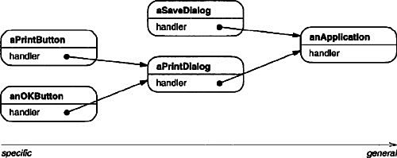
The first object in the chain receives the request and either handles it or forwards it to the next candidate on the chain, which does likewise. The object that made the request has no explicit knowledge of who will handle it—we say the request has an implicit receiver.
Let’s assume the user clicks for help on a button widget marked “Print.” The button is contained in an instance of PrintDialog, which knows the application object it belongs to (see preceding object diagram). The following interaction diagram illustrates how the help request gets forwarded along the chain:
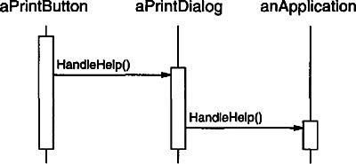
In this case, neither aPrintButton nor aPrintDialog handles the request; it stops at anApplication, which can handle it or ignore it. The client that issued the request has no direct reference to the object that ultimately fulfills it.
To forward the request along the chain, and to ensure receivers remain implicit, each object on the chain shares a common interface for handling requests and for accessing its successor on the chain. For example, the help system might define a HelpHandler class with a corresponding HandleHelp operation. HelpHandler can be the parent class for candidate object classes, or it can be defined as a mixin class. Then classes that want to handle help requests can make HelpHandler a parent:
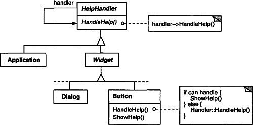
The Button, Dialog, and Application classes use HelpHandler operations to handle help requests. HelpHandler’s HandleHelp operation forwards the request to the successor by default. Subclasses can override this operation to provide help under the right circumstances; otherwise they can use the default implementation to forward the request.
Use Chain of Responsibility when
• more than one object may handle a request, and the handler isn’t known a priori. The handler should be ascertained automatically.
• you want to issue a request to one of several objects without specifying the receiver explicitly.
• the set of objects that can handle a request should be specified dynamically.
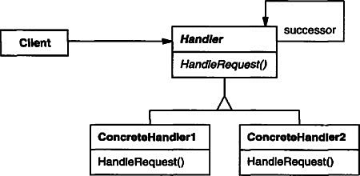
A typical object structure might look like this:
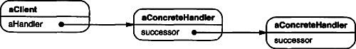
• Handler (HelpHandler)
– defines an interface for handling requests.
– (optional) implements the successor link.
• ConcreteHandler (PrintButton, PrintDialog)
– handles requests it is responsible for.
– can access its successor.
– if the ConcreteHandler can handle the request, it does so; otherwise it forwards the request to its successor.
• Client
– initiates the request to a ConcreteHandler object on the chain.
• When a client issues a request, the request propagates along the chain until a ConcreteHandler object takes responsibility for handling it.
Chain of Responsibility has the following benefits and liabilities:
1. Reduced coupling. The pattern frees an object from knowing which other object handles a request. An object only has to know that a request will be handled “appropriately.” Both the receiver and the sender have no explicit knowledge of each other, and an object in the chain doesn’t have to know about the chain’s structure.
As a result, Chain of Responsibility can simplify object interconnections. Instead of objects maintaining references to all candidate receivers, they keep a single reference to their successor.
2. Added flexibility in assigning responsibilities to objects. Chain of Responsibility gives you added flexibility in distributing responsibilities among objects. You can add or change responsibilities for handling a request by adding to or otherwise changing the chain at run-time. You can combine this with subclassing to specialize handlers statically.
3. Receipt isn’t guaranteed. Since a request has no explicit receiver, there’s no guarantee it’ll be handled—the request can fall off the end of the chain without ever being handled. A request can also go unhandled when the chain is not configured properly.
Here are implementation issues to consider in Chain of Responsibility:
1. Implementing the successor chain. There are two possible ways to implement the successor chain:
(a) Define new links (usually in the Handler, but ConcreteHandlers could define them instead).
Our examples so far define new links, but often you can use existing object references to form the successor chain. For example, parent references in a part-whole hierarchy can define a part’s successor. A widget structure might already have such links. Composite (163) discusses parent references in more detail.
Using existing links works well when the links support the chain you need. It saves you from defining links explicitly, and it saves space. But if the structure doesn’t reflect the chain of responsibility your application requires, then you’ll have to define redundant links.
2. Connecting successors. If there are no preexisting references for defining a chain, then you’ll have to introduce them yourself. In that case, the Handler not only defines the interface for the requests but usually maintains the successor as well. That lets the handler provide a default implementation of HandleRequest that forwards the request to the successor (if any). If a ConcreteHandler subclass isn’t interested in the request, it doesn’t have to override the forwarding operation, since its default implementation forwards unconditionally.
Here’s a HelpHandler base class that maintains a successor link:
3. Representing requests. Different options are available for representing requests. In the simplest form, the request is a hard-coded operation invocation, as in the case of HandleHelp. This is convenient and safe, but you can forward only the fixed set of requests that the Handler class defines.
An alternative is to use a single handler function that takes a request code (e.g., an integer constant or a string) as parameter. This supports an open-ended set of requests. The only requirement is that the sender and receiver agree on how the request should be encoded.
This approach is more flexible, but it requires conditional statements for dispatching the request based on its code. Moreover, there’s no type-safe way to pass parameters, so they must be packed and unpacked manually. Obviously this is less safe than invoking an operation directly.
To address the parameter-passing problem, we can use separate request objects that bundle request parameters. A Request class can represent requests explicitly, and new kinds of requests can be defined by subclassing. Subclasses can define different parameters. Handlers must know the kind of request (that is, which Request subclass they’re using) to access these parameters.
To identify the request, Request can define an accessor function that returns an identifier for the class. Alternatively, the receiver can use run-time type information if the implementation languages supports it.
Here is a sketch of a dispatch function that uses request objects to identify requests. A GetKind operation defined in the base Request class identifies the kind of request:
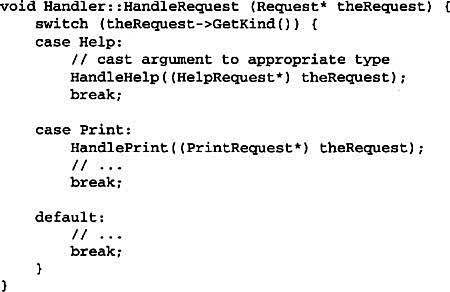
Subclasses can extend the dispatch by overriding HandleRequest. The subclass handles only the requests in which it’s interested; other requests are forwarded to the parent class. In this way, subclasses effectively extend (rather than override) the HandleRequest operation. For example, here’s how an ExtendedHandler subclass extends Handler’s version of HandleRequest:
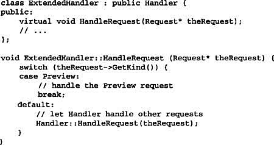
4. Automatic forwarding in Smalltalk. You can use the doesNotUnderstand mechanism in Smalltalk to forward requests. Messages that have no corresponding methods are trapped in the implementation of doesNotUnderstand, which can be overridden to forward the message to an object’s successor. Thus it isn’t necessary to implement forwarding manually; the class handles only the request in which it’s interested, and it relies on doesNotUnderstand to forward all others.
The following example illustrates how a chain of responsibility can handle requests for an on-line help system like the one described earlier. The help request is an explicit operation. We’ll use existing parent references in the widget hierarchy to propagate requests between widgets in the chain, and we’ll define a reference in the Handler class to propagate help requests between nonwidgets in the chain.
The HelpHandler class defines the interface for handling help requests. It maintains a help topic (which is empty by default) and keeps a reference to its successor on the chain of help handlers. The key operation is HandleHelp, which subclasses override. HasHelp is a convenience operation for checking whether there is an associated help topic.
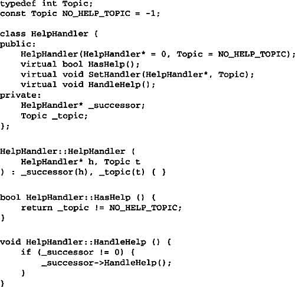
All widgets are subclasses of the Widget abstract class. Widget is a subclass of HelpHandler, since all user interface elements can have help associated with them. (We could have used a mixin-based implementation just as well.)
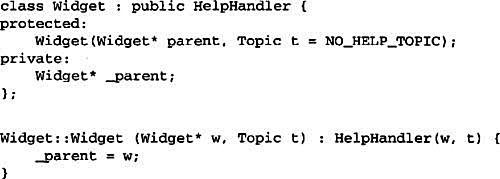
In our example, a button is the first handler on the chain. The Button class is a subclass of Widget. The Button constructor takes two parameters: a reference to its enclosing widget and the help topic.
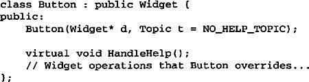
Button’s version of HandleHelp first tests to see if there is a help topic for buttons. If the developer hasn’t defined one, then the request gets forwarded to the successor using the HandleHelp operation in HelpHandler. If there is a help topic, then the button displays it, and the search ends.

Dialog implements a similar scheme, except that its successor is not a widget but any help handler. In our application this successor will be an instance of Application.
At the end of the chain is an instance of Application. The application is not a widget, so Application is subclassed directly from HelpHandler. When a help request propagates to this level, the application can supply information on the application in general, or it can offer a list of different help topics:
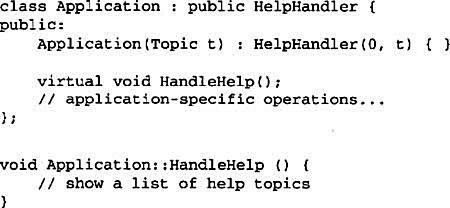
The following code creates and connects these objects. Here the dialog concerns printing, and so the objects have printing-related topics assigned.
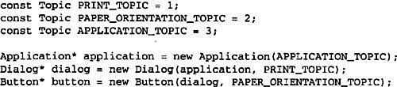
We can invoke the help request by calling HandleHelp on any object on the chain. To start the search at the button object, just call HandleHelp on it:
In this case, the button will handle the request immediately. Note that any HelpHandler class could be made the successor of Dialog. Moreover, its successor could be changed dynamically. So no matter where a dialog is used, you’ll get the proper context-dependent help information for it.
Several class libraries use the Chain of Responsibility pattern to handle user events. They use different names for the Handler class, but the idea is the same: When the user clicks the mouse or presses a key, an event gets generated and passed along the chain. MacApp [App89] and ET++ [WGM88] call it “Event-Handler,” Symantec’s TCL library [Sym93b] calls it “Bureaucrat,” and NeXT’s AppKit [Add94] uses the name “Responder.”
The Unidraw framework for graphical editors defines Command objects that encapsulate requests to Component and Component View objects [VL90]. Commands are requests in the sense that a component or component view may interpret a command to perform an operation. This corresponds to the “requests as objects” approach described in Implementation. Components and component views may be structured hierarchically. A component or a component view may forward command interpretation to its parent, which may in turn forward it to its parent, and so on, thereby forming a chain of responsibility.
ET++ uses Chain of Responsibility to handle graphical update. A graphical object calls the InvalidateRect operation whenever it must update a part of its appearance. A graphical object can’t handle InvalidateRect by itself, because it doesn’t know enough about its context. For example, a graphical object can be enclosed in objects like Scrollers or Zoomers that transform its coordinate system. That means the object might be scrolled or zoomed so that it’s partially out of view. Therefore the default implementation of InvalidateRect forwards the request to the enclosing container object. The last object in the forwarding chain is a Window instance. By the time Window receives the request, the invalidation rectangle is guaranteed to be transformed properly. The Window handles InvalidateRect by notifying the window system interface and requesting an update.
Chain of Responsibility is often applied in conjunction with Composite (163). There, a component’s parent can act as its successor.
Encapsulate a request as an object, thereby letting you parameterize clients with different requests, queue or log requests, and support undoable operations.
Action, Transaction
Sometimes it’s necessary to issue requests to objects without knowing anything about the operation being requested or the receiver of the request. For example, user interface toolkits include objects like buttons and menus that carry out a request in response to user input. But the toolkit can’t implement the request explicitly in the button or menu, because only applications that use the toolkit know what should be done on which object. As toolkit designers we have no way of knowing the receiver of the request or the operations that will carry it out.
The Command pattern lets toolkit objects make requests of unspecified application objects by turning the request itself into an object. This object can be stored and passed around like other objects. The key to this pattern is an abstract Command class, which declares an interface for executing operations. In the simplest form this interface includes an abstract Execute operation. Concrete Command subclasses specify a receiver-action pair by storing the receiver as an instance variable and by implementing Execute to invoke the request. The receiver has the knowledge required to carry out the request.
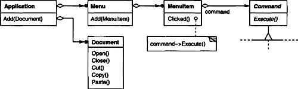
Menus can be implemented easily with Command objects. Each choice in a Menu is an instance of a Menultem class. An Application class creates these menus and their menu items along with the rest of the user interface. The Application class also keeps track of Document objects that a user has opened.
The application configures each Menultem with an instance of a concrete Command subclass. When the user selects a Menultem, the Menultem calls Execute on its command, and Execute carries out the operation. Menultems don’t know which subclass of Command they use. Command subclasses store the receiver of the request and invoke one or more operations on the receiver.
For example, PasteCommand supports pasting text from the clipboard into a Document. PasteCommand’s receiver is the Document object it is supplied upon instantiation. The Execute operation invokes Paste on the receiving Document.
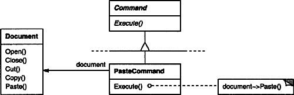
OpenCommand’s Execute operation is different: it prompts the user for a document name, creates a corresponding Document object, adds the document to the receiving application, and opens the document.
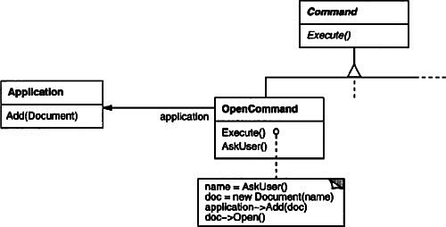
Sometimes a Menultem needs to execute a sequence of commands. For example, a Menultem for centering a page at normal size could be constructed from a CenterDocumentCommand object and a NormalSizeCommand object. Because it’s common to string commands together in this way, we can define a MacroCommand class to allow a Menultem to execute an open-ended number of commands.
MacroCommand is a concrete Command subclass that simply executes a sequence of Commands. MacroCommand has no explicit receiver, because the commands it sequences define their own receiver.

In each of these examples, notice how the Command pattern decouples the object that invokes the operation from the one having the knowledge to perform it. This gives us a lot of flexibility in designing our user interface. An application can provide both a menu and a push button interface to a feature just by making the menu and the push button share an instance of the same concrete Command subclass. We can replace commands dynamically, which would be useful for implementing context-sensitive menus. We can also support command scripting by composing commands into larger ones. All of this is possible because the object that issues a request only needs to know how to issue it; it doesn’t need to know how the request will be carried out.
Use the Command pattern when you want to
• parameterize objects by an action to perform, as Menultem objects did above. You can express such parameterization in a procedural language with a callback function, that is, a function that’s registered somewhere to be called at a later point. Commands are an object-oriented replacement for callbacks.
• specify, queue, and execute requests at different times. A Command object can have a lifetime independent of the original request. If the receiver of a request can be represented in an address space-independent way, then you can transfer a command object for the request to a different process and fulfill the request there.
• support undo. The Command’s Execute operation can store state for reversing its effects in the command itself. The Command interface must have an added Unexecute operation that reverses the effects of a previous call to Execute. Executed commands are stored in a history list. Unlimited-level undo and redo is achieved by traversing this list backwards and forwards calling Unexecute and Execute, respectively.
• support logging changes so that they can be reapplied in case of a system crash. By augmenting the Command interface with load and store operations, you can keep a persistent log of changes. Recovering from a crash involves reloading logged commands from disk and reexecuting them with the Execute operation.
• structure a system around high-level operations built on primitives operations. Such a structure is common in information systems that support transactions. A transaction encapsulates a set of changes to data. The Command pattern offers a way to model transactions. Commands have a common interface, letting you invoke all transactions the same way. The pattern also makes it easy to extend the system with new transactions.
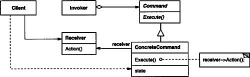
• Command
– declares an interface for executing an operation.
• ConcreteCommand (PasteCommand, OpenCommand)
– defines a binding between a Receiver object and an action.
– implements Execute by invoking the corresponding operation(s) on Receiver.
• Client (Application)
– creates a ConcreteCommand object and sets its receiver.
• Invoker (Menultem)
– asks the command to carry out the request.
• Receiver (Document, Application)
– knows how to perform the operations associated with carrying out a request. Any class may serve as a Receiver.
• The client creates a ConcreteCommand object and specifies its receiver.
• An Invoker object stores the ConcreteCommand object.
• The invoker issues a request by calling Execute on the command. When commands are undoable, ConcreteCommand stores state for undoing the command prior to invoking Execute.
• The ConcreteCommand object invokes operations on its receiver to carry out the request.
The following diagram shows the interactions between these objects. It illustrates how Command decouples the invoker from the receiver (and the request it carries out).
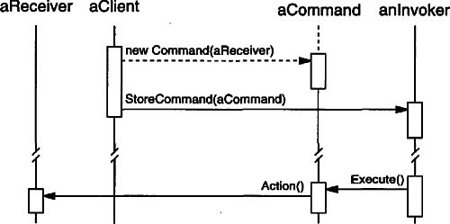
The Command pattern has the following consequences:
1. Command decouples the object that invokes the operation from the one that knows how to perform it.
2. Commands are first-class objects. They can be manipulated and extended like any other object.
3. You can assemble commands into a composite command. An example is the MacroCommand class described earlier. In general, composite commands are an instance of the Composite (163) pattern.
4. It’s easy to add new Commands, because you don’t have to change existing classes.
Consider the following issues when implementing the Command pattern:
1. How intelligent should a command be? A command can have a wide range of abilities. At one extreme it merely defines a binding between a receiver and the actions that carry out the request. At the other extreme it implements everything itself without delegating to a receiver at all. The latter extreme is useful when you want to define commands that are independent of existing classes, when no suitable receiver exists, or when a command knows its receiver implicitly. For example, a command that creates another application window may be just as capable of creating the window as any other object. Somewhere in between these extremes are commands that have enough knowledge to find their receiver dynamically.
2. Supporting undo and redo. Commands can support undo and redo capabilities if they provide a way to reverse their execution (e.g., an Unexecute or Undo operation). A ConcreteCommand class might need to store additional state to do so. This state can include
• the Receiver object, which actually carries out operations in response to the request,
• the arguments to the operation performed on the receiver, and
• any original values in the receiver that can change as a result of handling the request. The receiver must provide operations that let the command return the receiver to its prior state.
To support one level of undo, an application needs to store only the command that was executed last. For multiple-level undo and redo, the application needs a history list of commands that have been executed, where the maximum length of the list determines the number of undo/redo levels. The history list stores sequences of commands that have been executed. Traversing backward through the list and reverse-executing commands cancels their effect; traversing forward and executing commands reexecutes them.
An undoable command might have to be copied before it can be placed on the history list. That’s because the command object that carried out the original request, say, from a Menultem, will perform other requests at later times. Copying is required to distinguish different invocations of the same command if its state can vary across invocations.
For example, a DeleteCommand that deletes selected objects must store different sets of objects each time it’s executed. Therefore the DeleteCommand object must be copied following execution, and the copy is placed on the history list. If the command’s state never changes on execution, then copying is not required—only a reference to the command need be placed on the history list. Commands that must be copied before being placed on the history list act as prototypes (see Prototype (117)).
3. Avoiding error accumulation in the undo process. Hysteresis can be a problem in ensuring a reliable, semantics-preserving undo/redo mechanism. Errors can accumulate as commands are executed, unexecuted, and reexecuted repeatedly so that an application’s state eventually diverges from original values. It may be necessary therefore to store more information in the command to ensure that objects are restored to their original state. The Memento (283) pattern can be applied to give the command access to this information without exposing the internals of other objects.
4. Using C++ templates. For commands that (1) aren’t undoable and (2) don’t require arguments, we can use C++ templates to avoid creating a Command subclass for every kind of action and receiver. We show how to do this in the Sample Code section.
The C++ code shown here sketches the implementation of the Command classes in the Motivation section. We’ll define OpenCommand, PasteCommand, and MacroCommand. First the abstract Command class:
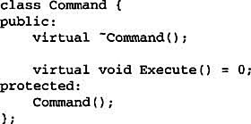
OpenCommand opens a document whose name is supplied by the user. An OpenCommand must be passed an Application object in its constructor. AskUser is an implementation routine that prompts the user for the name of the document to open.
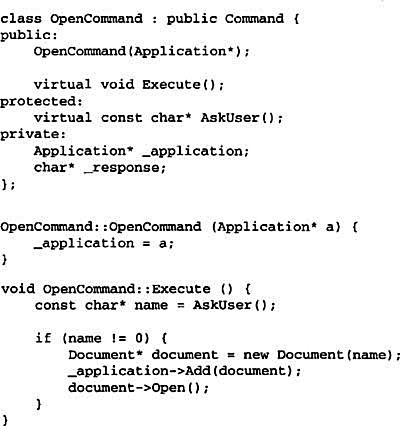
A PasteCommand must be passed a Document object as its receiver. The receiver is given as a parameter to PasteCommand’s constructor.
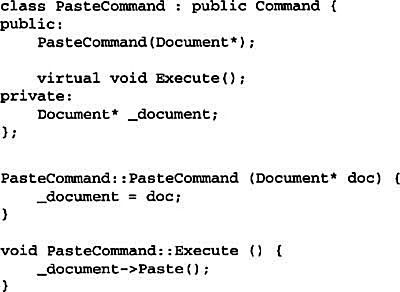
For simple commands that aren’t undoable and don’t require arguments, we can use a class template to parameterize the command’s receiver. We’ll define a template subclass SimpleCommand for such commands. SimpleCommand is parameterized by the Receiver type and maintains a binding between a receiver object and an action stored as a pointer to a member function.
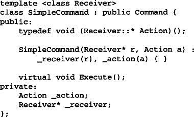
The constructor stores the receiver and the action in the corresponding instance variables. Execute simply applies the action to the receiver.
To create a command that calls Action on an instance of class MyClass, a client simply writes
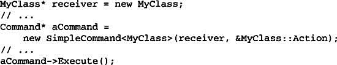
Keep in mind that this solution only works for simple commands. More complex commands that keep track of not only their receivers but also arguments and/or undo state require a Command subclass.
A MacroCommand manages a sequence of subcommands and provides operations for adding and removing subcommands. No explicit receiver is required, because the subcommands already define their receiver.
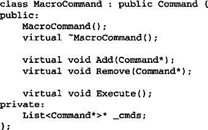
The key to the MacroCommand is its Execute member function. This traverses all the subcommands and performs Execute on each of them.
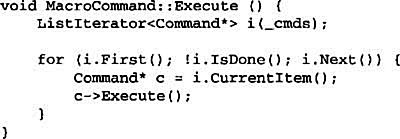
Note that should the MacroCommand implement an Unexecute operation, then its subcommands must be unexecuted in reverse order relative to Execute’s implementation.
Finally, MacroCommand must provide operations to manage its subcommands. The MacroCommand is also responsible for deleting its subcommands.
Perhaps the first example of the Command pattern appears in a paper by Lieberman [Lie85]. MacApp [App89] popularized the notion of commands for implementing undoable operations. ET++ [WGM88], Interviews [LCI+92], and Unidraw [VL90] also define classes that follow the Command pattern. Interviews defines an Action abstract class that provides command functionality. It also defines an ActionCallback template, parameterized by action method, that can instantiate command subclasses automatically.
The THINK class library [Sym93b] also uses commands to support undoable actions. Commands in THINK are called “Tasks.” Task objects are passed along a Chain of Responsibility (223) for consumption.
Unidraw’s command objects are unique in that they can behave like messages. A Unidraw command may be sent to another object for interpretation, and the result of the interpration varies with the receiving object. Moreover, the receiver may delegate the interpretation to another object, typically the receiver’s parent in a larger structure as in a Chain of Responsibility. The receiver of a Unidraw command is thus computed rather than stored. Unidraw’s interpretation mechanism depends on run-time type information.
Coplien describes how to implement functors, objects that are functions, in C++ [Cop92]. He achieves a degree of transparency in their use by overloading the function call operator (operator()). The Command pattern is different; its focus is on maintaining a binding between a receiver and a function (i.e., action), not just maintaining a function.
A Composite (163) can be used to implement MacroCommands.
A Memento (283) can keep state the command requires to undo its effect.
A command that must be copied before being placed on the history list acts as a Prototype (117).
Given a language, define a represention for its grammar along with an interpreter that uses the representation to interpret sentences in the language.
If a particular kind of problem occurs often enough, then it might be worthwhile to express instances of the problem as sentences in a simple language. Then you can build an interpreter that solves the problem by interpreting these sentences.
For example, searching for strings that match a pattern is a common problem. Regular expressions are a standard language for specifying patterns of strings. Rather than building custom algorithms to match each pattern against strings, search algorithms could interpret a regular expression that specifies a set of strings to match.
The Interpreter pattern describes how to define a grammar for simple languages, represent sentences in the language, and interpret these sentences. In this example, the pattern describes how to define a grammar for regular expressions, represent a particular regular expression, and how to interpret that regular expression.
Suppose the following grammar defines the regular expressions:
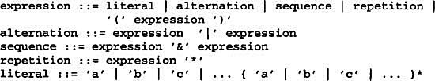
The symbol expression is the start symbol, and literal is a terminal symbol defining simple words
The Interpreter pattern uses a class to represent each grammar rule. Symbols on the right-hand side of the rule are instance variables of these classes. The grammar above is represented by five classes: an abstract class RegularExpression and its four subclasses LiteralExpression, AlternationExpression, SequenceExpression, and RepetitionExpression. The last three classes define variables that hold subexpressions.
Every regular expression defined by this grammar is represented by an abstract syntax tree made up of instances of these classes. For example, the abstract syntax tree
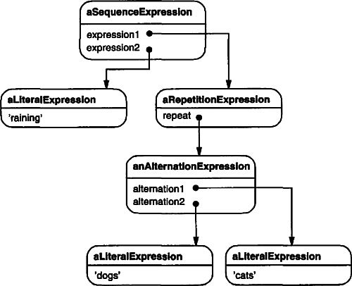
represents the regular expression
raining & (dogs | cats) *
We can create an interpreter for these regular expressions by defining the Interpret operation on each subclass of RegularExpression. Interpret takes as an argument the context in which to interpret the expression. The context contains the input string and information on how much of it has been matched so far. Each subclass of RegularExpression implements Interpret to match the next part of the input string based on the current context. For example,
• LiteralExpression will check if the input matches the literal it defines,
• AlternationExpression will check if the input matches any of its alternatives,
• RepetitionExpression will check if the input has multiple copies of expression it repeats,
and so on.
Use the Interpreter pattern when there is a language to interpret, and you can represent statements in the language as abstract syntax trees. The Interpreter pattern works best when
• the grammar is simple. For complex grammars, the class hierarchy for the grammar becomes large and unmanageable. Tools such as parser generators are a better alternative in such cases. They can interpret expressions without building abstract syntax trees, which can save space and possibly time.
• efficiency is not a critical concern. The most efficient interpreters are usually not implemented by interpreting parse trees directly but by first translating them into another form. For example, regular expressions are often transformed into state machines. But even then, the translator can be implemented by the Interpreter pattern, so the pattern is still applicable.
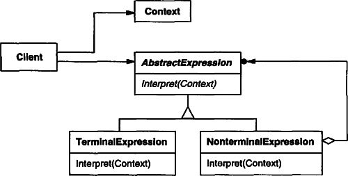
• AbstractExpression (RegularExpression)
– declares an abstract Interpret operation that is common to all nodes in the abstract syntax tree.
• TerminalExpression (LiteralExpression)
– implements an Interpret operation associated with terminal symbols in the grammar.
– an instance is required for every terminal symbol in a sentence.
• NonterminalExpression (AlternationExpression, RepetitionExpression, SequenceExpressions)
– one such class is required for every rule R ::= R1R2...Rn in the grammar.
– maintains instance variables of type AbstractExpression for each of the symbols R1 through Rn.
– implements an Interpret operation for nonterminal symbols in the grammar. Interpret typically calls itself recursively on the variables representing R1 through Rn.
• Context
– contains information that’s global to the interpreter.
• Client
– builds (or is given) an abstract syntax tree representing a particular sentence in the language that the grammar defines. The abstract syntax tree is assembled from instances of the NonterminalExpression and TerminalExpression classes.
– invokes the Interpret operation.
• The client builds (or is given) the sentence as an abstract syntax tree of NonterminalExpression and TerminalExpression instances. Then the client initializes the context and invokes the Interpret operation.
• Each NonterminalExpression node defines Interpret in terms of Interpret on each subexpression. The Interpret operation of each TerminalExpression defines the base case in the recursion.
• The Interpret operations at each node use the context to store and access the state of the interpreter.
The Interpreter pattern has the following benefits and liabilities:
1. It’s easy to change and extend the grammar. Because the pattern uses classes to represent grammar rules, you can use inheritance to change or extend the grammar. Existing expressions can be modified incrementally, and new expressions can be defined as variations on old ones.
2. Implementing the grammar is easy, too. Classes defining nodes in the abstract syntax tree have similar implementations. These classes are easy to write, and often their generation can be automated with a compiler or parser generator.
3. Complex grammars are hard to maintain. The Interpreter pattern defines at least one class for every rule in the grammar (grammar rules defined using BNF may require multiple classes). Hence grammars containing many rules can be hard to manage and maintain. Other design patterns can be applied to mitigate the problem (see Implementation). But when the grammar is very complex, other techniques such as parser or compiler generators are more appropriate.
4. Adding new ways to interpret expressions. The Interpreter pattern makes it easier to evaluate an expression in a new way. For example, you can support pretty printing or type-checking an expression by defining a new operation on the expression classes. If you keep creating new ways of interpreting an expression, then consider using the Visitor (331) pattern to avoid changing the grammar classes.
The Interpreter and Composite (163) patterns share many implementation issues. The following issues are specific to Interpreter:
1. Creating the abstract syntax tree. The Interpreter pattern doesn’t explain how to create an abstract syntax tree. In other words, it doesn’t address parsing. The abstract syntax tree can be created by a table-driven parser, by a hand-crafted (usually recursive descent) parser, or directly by the client.
2. Defining the Interpret operation. You don’t have to define the Interpret operation in the expression classes. If it’s common to create a new interpreter, then it’s better to use the Visitor (331) pattern to put Interpret in a separate “visitor” object. For example, a grammar for a programming language will have many operations on abstract syntax trees, such as as type-checking, optimization, code generation, and so on. It will be more likely to use a visitor to avoid defining these operations on every grammar class.
3. Sharing terminal symbols with the Flyweight pattern. Grammars whose sentences contain many occurrences of a terminal symbol might benefit from sharing a single copy of that symbol. Grammars for computer programs are good examples—each program variable will appear in many places throughout the code. In the Motivation example, a sentence can have the terminal symbol dog (modeled by the LiteralExpression class) appearing many times.
Terminal nodes generally don’t store information about their position in the abstract syntax tree. Parent nodes pass them whatever context they need during interpretation. Hence there is a distinction between shared (intrinsic) state and passed-in (extrinsic) state, and the Flyweight (195) pattern applies.
For example, each instance of LiteralExpression for dog receives a context containing the substring matched so far. And every such LiteralExpression does the same thing in its Interpret operation—it checks whether the next part of the input contains a dog—no matter where the instance appears in the tree.
Here are two examples. The first is a complete example in Smalltalk for checking whether a sequence matches a regular expression. The second is a C++ program for evaluating Boolean expressions.
The regular expression matcher tests whether a string is in the language defined by the regular expression. The regular expression is defined by the following grammar:
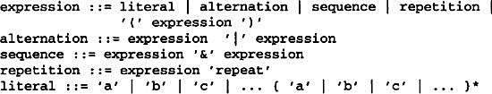
This grammar is a slight modification of the Motivation example. We changed the concrete syntax of regular expressions a little, because symbol "*" can’t be a postfix operation in Smalltalk. So we use repeat instead. For example, the regular expression
(('dog ' | 'cat ') repeat & 'weather')
matches the input string "dog dog cat weather".
To implement the matcher, we define the five classes described on page 243. The class SequenceExpression has instance variables expression1 and expression2 for its children in the abstract syntax tree. AlternationExpression stores its alternatives in the instance variables alternativel and alternative2, while RepetitionExpression holds the expression it repeats in its repetition instance variable. LiteralExpression has a components instance variable that holds a list of objects (probably characters). These represent the literal string that must match the input sequence.
The match: operation implements an interpreter for the regular expression. Each of the classes defining the abstract syntax tree implements this operation. It takes inputState as an argument representing the current state of the matching process, having read part of the input string.
This current state is characterized by a set of input streams representing the set of inputs that the regular expression could have accepted so far. (This is roughly equivalent to recording all states that the equivalent finite state automata would be in, having recognized the input stream to this point).
The current state is most important to the repeat operation. For example, if the regular expression were
'a' repeat
then the interpreter could match "a", "aa", "aaa", and so on. If it were
'a' repeat & 'be'
then it could match "abc", "aabc", "aaabc", and so on. But if the regular expression were
'a' repeat & 'abc'
then matching the input "aabc" against the subexpression "'a' repeat" would yield two input streams, one having matched one character of the input, and the other having matched two characters. Only the stream that has accepted one character will match the remaining "abc".
Now we consider the definitions of match: for each class defining the regular expression. The definition for SequenceExpression matches each of its subexpressions in sequence. Usually it will eliminate input streams from its inputState.
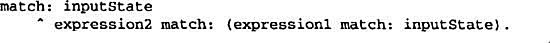
An AlternationExpression will return a state that consists of the union of states from either alternative. The definition of match: for AlternationExpression is
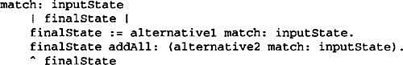
The match: operation for RepetitionExpression tries to find as many states that could match as possible:
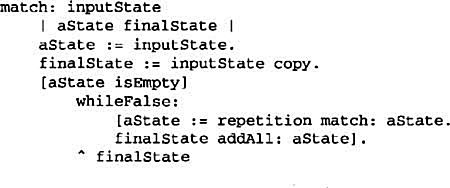
Its output state usually contains more states than its input state, because a RepetitionExpression can match one, two, or many occurrences of repetition on the input state. The output states represent all these possibilities, allowing subsequent elements of the regular expression to decide which state is the correct one.
Finally, the definition of match: for LiteralExpression tries to match its components against each possible input stream. It keeps only those input streams that have a match:
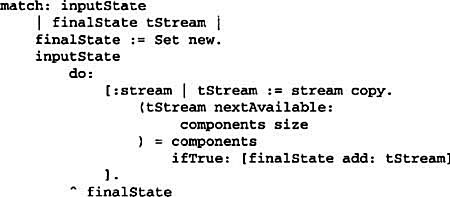
The nextAvailable: message advances the input stream. This is the only match: operation that advances the stream. Notice how the state that’s returned contains a copy of the input stream, thereby ensuring that matching a literal never changes the input stream. This is important because each alternative of an AlternationExpression should see identical copies of the input stream.
Now that we’ve defined the classes that make up an abstract syntax tree, we can describe how to build it. Rather than write a parser for regular expressions, we’ll define some operations on the RegularExpression classes so that evaluating a Smalltalk expression will produce an abstract syntax tree for the corresponding regular expression. That lets us use the built-in Smalltalk compiler as if it were a parser for regular expressions.
To build the abstract syntax tree, we’ll need to define "|", "repeat", and "&" as operations on RegularExpression. These operations are defined in class RegularExpression like this:
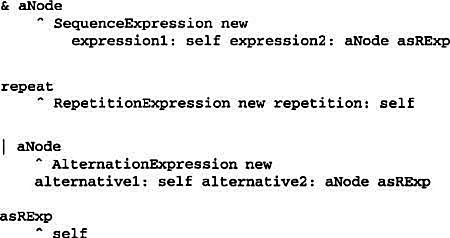
The asRExp operation will convert literals into RegularExpressions. These operations are defined in class String:
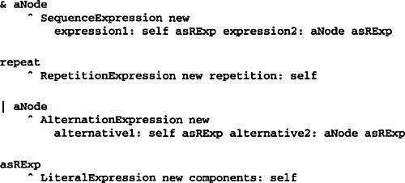
If we defined these operations higher up in the class hierarchy (Sequenceable-Collection in Smalltalk-80, IndexedCollection in Smalltalk/V), then they would also be defined for classes such as Array and OrderedCollection. This would let regular expressions match sequences of any kind of object.
The second example is a system for manipulating and evaluating Boolean expressions implemented in C++. The terminal symbols in this language are Boolean variables, that is, the constants true and false. Nonterminal symbols represent expressions containing the operators and, or, and not. The grammar is defined as follows1:
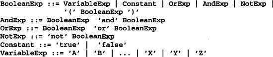
We define two operations on Boolean expressions. The first, Evaluate, evaluates a Boolean expression in a context that assigns a true or false value to each variable. The second operation, Replace, produces a new Boolean expression by replacing a variable with an expression. Replace shows how the Interpreter pattern can be used for more than just evaluating expressions. In this case, it manipulates the expression itself.
We give details of just the BooleanExp, VariableExp, and AndExp classes here. Classes OrExp and NotExp are similar to AndExp. The Constant class represents the Boolean constants.
BooleanExp defines the interface for all classes that define a Boolean expression:
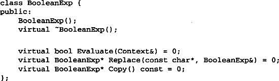
The class Context defines a mapping from variables to Boolean values, which we represent with the C++ constants true and false. Context has the following interface:
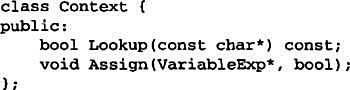
A VariableExp represents a named variable:
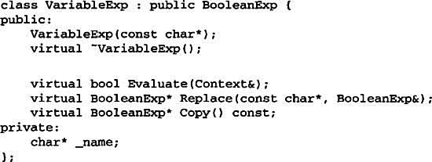
The constructor takes the variable’s name as an argument:
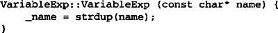
Evaluating a variable returns its value in the current context.
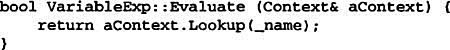
Copying a variable returns a new VariableExp:
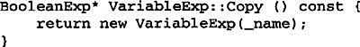
To replace a variable with an expression, we check to see if the variable has the same name as the one it is passed as an argument:
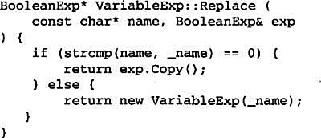
An AndExp represents an expression made by ANDing two Boolean expressions together.
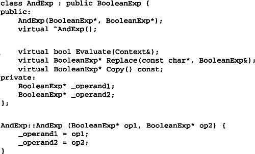
Evaluating an AndExp evaluates its operands and returns the logical “and” of the results.
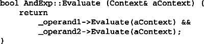
An AndExp implements Copy and Replace by making recursive calls on its operands:
Now we can define the Boolean expression
(true and x) or (y and (not x))
and evaluate it for a given assignment of true or false to the variables x and y:
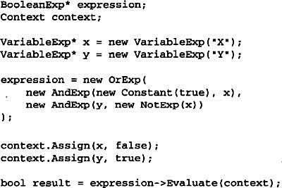
The expression evaluates to true for this assignment to x and y. We can evaluate the expression with a different assignment to the variables simply by changing the context.
Finally, we can replace the variable y with a new expression and then reevaluate it:
This example illustrates an important point about the Interpreter pattern: many kinds of operations can “interpret” a sentence. Of the three operations defined for BooleanExp, Evaluate fits our idea of what an interpreter should do most closely—that is, it interprets a program or expression and returns a simple result.
However, Replace can be viewed as an interpreter as well. It’s an interpreter whose context is the name of the variable being replaced along with the expression that replaces it, and whose result is a new expression. Even Copy can be thought of as an interpreter with an empty context. It may seem a little strange to consider Replace and Copy to be interpreters, because these are just basic operations on trees. The examples in Visitor (331) illustrate how all three operations can be refactored into a separate “interpreter” visitor, thus showing that the similarity is deep.
The Interpreter pattern is more than just an operation distributed over a class hierarchy that uses the Composite (163) pattern. We consider Evaluate an interpreter because we think of the BooleanExp class hierarchy as representing a language. Given a similar class hierarchy for representing automotive part assemblies, it’s unlikely we’d consider operations like Weight and Copy as interpreters even though they are distributed over a class hierarchy that uses the Composite pattern—we just don’t think of automotive parts as a language. It’s a matter of perspective; if we started publishing grammars of automotive parts, then we could consider operations on those parts to be ways of interpreting the language.
The Interpreter pattern is widely used in compilers implemented with object-oriented languages, as the Smalltalk compilers are. SPECTalk uses the pattern to interpret descriptions of input file formats [Sza92]. The QOCA constraint-solving toolkit uses it to evaluate constraints [HHMV92].
Considered in its most general form (i.e., an operation distributed over a class hierarchy based on the Composite pattern), nearly every use of the Composite pattern will also contain the Interpreter pattern. But the Interpreter pattern should be reserved for those cases in which you want to think of the class hierarchy as defining a language.
Composite (163): The abstract syntax tree is an instance of the Composite pattern.
Flyweight (195) shows how to share terminal symbols within the abstract syntax tree.
Iterator (257): The interpreter can use an Iterator to traverse the structure.
Visitor (331) can be used to maintain the behavior in each node in the abstract syntax tree in one class.
Provide a way to access the elements of an aggregate object sequentially without exposing its underlying representation.
Cursor
An aggregate object such as a list should give you a way to access its elements without exposing its internal structure. Moreover, you might want to traverse the list in different ways, depending on what you want to accomplish. But you probably don’t want to bloat the List interface with operations for different traversals, even if you could anticipate the ones you will need. You might also need to have more than one traversal pending on the same list.
The Iterator pattern lets you do all this. The key idea in this pattern is to take the responsibility for access and traversal out of the list object and put it into an iterator object. The Iterator class defines an interface for accessing the list’s elements. An iterator object is responsible for keeping track of the current element; that is, it knows which elements have been traversed already.
For example, a List class would call for a ListIterator with the following relationship between them:

Before you can instantiate ListIterator, you must supply the List to traverse. Once you have the ListIterator instance, you can access the list’s elements sequentially. The CurrentItem operation returns the current element in the list, First initializes the current element to the first element, Next advances the current element to the next element, and IsDone tests whether we’ve advanced beyond the last element—that is, we’re finished with the traversal.
Separating the traversal mechanism from the List object lets us define iterators for different traversal policies without enumerating them in the List interface. For example, FilteringListIterator might provide access only to those elements that satisfy specific filtering constraints.
Notice that the iterator and the list are coupled, and the client must know that it is a list that’s traversed as opposed to some other aggregate structure. Hence the client commits to a particular aggregate structure. It would be better if we could change the aggregate class without changing client code. We can do this by generalizing the iterator concept to support polymorphic iteration.
As an example, let’s assume that we also have a SkipList implementation of a list. A skiplist [Pug90] is a probabilistic data structure with characteristics similar to balanced trees. We want to be able to write code that works for both List and SkipList objects.
We define an AbstractList class that provides a common interface for manipulating lists. Similarly, we need an abstract Iterator class that defines a common iteration interface. Then we can define concrete Iterator subclasses for the different list implementations. As a result, the iteration mechanism becomes independent of concrete aggregate classes.
The remaining problem is how to create the iterator. Since we want to write code that’s independent of the concrete List subclasses, we cannot simply instantiate a specific class. Instead, we make the list objects responsible for creating their corresponding iterator. This requires an operation like CreateIterator through which clients request an iterator object.
CreateIterator is an example of a factory method (see Factory Method (107)). We use it here to let a client ask a list object for the appropriate iterator. The Factory Method approach give rise to two class hierarchies, one for lists and another for iterators. The CreateIterator factory method “connects” the two hierarchies.
Use the Iterator pattern
• to access an aggregate object’s contents without exposing its internal representation.
• to support multiple traversals of aggregate objects.
• to provide a uniform interface for traversing different aggregate structures (that is, to support polymorphic iteration).
• Iterator
– defines an interface for accessing and traversing elements.
• ConcreteIterator
– implements the Iterator interface.
– keeps track of the current position in the traversal of the aggregate.
• Aggregate
– defines an interface for creating an Iterator object.
• ConcreteAggregate
– implements the Iterator creation interface to return an instance of the proper ConcreteIterator.
• A ConcreteIterator keeps track of the current object in the aggregate and can compute the succeeding object in the traversal.
The Iterator pattern has three important consequences:
1. It supports variations in the traversal of an aggregate. Complex aggregates may be traversed in many ways. For example, code generation and semantic checking involve traversing parse trees. Code generation may traverse the parse tree inorder or preorder. Iterators make it easy to change the traversal algorithm: Just replace the iterator instance with a different one. You can also define Iterator subclasses to support new traversals.
2. Iterators simplify the Aggregate interface. Iterator’s traversal interface obviates the need for a similar interface in Aggregate, thereby simplifying the aggregate’s interface.
3. More than one traversal can be pending on an aggregate. An iterator keeps track of its own traversal state. Therefore you can have more than one traversal in progress at once.
Iterator has many implementation variants and alternatives. Some important ones follow. The trade-offs often depend on the control structures your language provides. Some languages (CLU [LG86], for example) even support this pattern directly.
1. Who controls the iteration? A fundamental issue is deciding which party controls the iteration, the iterator or the client that uses the iterator. When the client controls the iteration, the iterator is called an external iterator, and when the iterator controls it, the iterator is an internal iterator.2 Clients that use an external iterator must advance the traversal and request the next element explicitly from the iterator. In contrast, the client hands an internal iterator an operation to perform, and the iterator applies that operation to every element in the aggregate.
External iterators are more flexible than internal iterators. It’s easy to compare two collections for equality with an external iterator, for example, but it’s practically impossible with internal iterators. Internal iterators are especially weak in a language like C++ that does not provide anonymous functions, closures, or continuations like Smalltalk and CLOS. But on the other hand, internal iterators are easier to use, because they define the iteration logic for you.
2. Who defines the traversal algorithm? The iterator is not the only place where the traversal algorithm can be defined. The aggregate might define the traversal algorithm and use the iterator to store just the state of the iteration. We call this kind of iterator a cursor, since it merely points to the current position in the aggregate. A client will invoke the Next operation on the aggregate with the cursor as an argument, and the Next operation will change the state of the cursor.3
If the iterator is responsible for the traversal algorithm, then it’s easy to use different iteration algorithms on the same aggregate, and it can also be easier to reuse the same algorithm on different aggregates. On the other hand, the traversal algorithm might need to access the private variables of the aggregate. If so, putting the traversal algorithm in the iterator violates the encapsulation of the aggregate.
3. How robust is the iterator? It can be dangerous to modify an aggregate while you’re traversing it. If elements are added or deleted from the aggregate, you might end up accessing an element twice or missing it completely. A simple solution is to copy the aggregate and traverse the copy, but that’s too expensive to do in general.
A robust iterator ensures that insertions and removals won’t interfere with traversal, and it does it without copying the aggregate. There are many ways to implement robust iterators. Most rely on registering the iterator with the aggregate. On insertion or removal, the aggregate either adjusts the internal state of iterators it has produced, or it maintains information internally to ensure proper traversal.
Kofler provides a good discussion of how robust iterators are implemented in ET++ [Kof93]. Murray discusses the implementation of robust iterators for the USL StandardComponents’ List class [Mur93].
4. Additional Iterator operations. The minimal interface to Iterator consists of the operations First, Next, IsDone, and CurrentItem.4 Some additional operations might prove useful. For example, ordered aggregates can have a Previous operation that positions the iterator to the previous element. A SkipTo operation is useful for sorted or indexed collections. SkipTo positions the iterator to an object matching specific criteria.
5. Using polymorphic iterators in C++. Polymorphic iterators have their cost. They require the iterator object to be allocated dynamically by a factory method. Hence they should be used only when there’s a need for polymorphism. Otherwise use concrete iterators, which can be allocated on the stack.
Polymorphic iterators have another drawback: the client is responsible for deleting them. This is error-prone, because it’s easy to forget to free a heap-allocated iterator object when you’re finished with it. That’s especially likely when there are multiple exit points in an operation. And if an exception is triggered, the iterator object will never be freed.
The Proxy (207) pattern provides a remedy. We can use a stack-allocated proxy as a stand-in for the real iterator. The proxy deletes the iterator in its destructor. Thus when the proxy goes out of scope, the real iterator will get deallocated along with it. The proxy ensures proper cleanup, even in the face of exceptions. This is an application of the well-known C++ technique “resource allocation is initialization” [ES90]. The Sample Code gives an example.
6. Iterators may have privileged access. An iterator can be viewed as an extension of the aggregate that created it. The iterator and the aggregate are tightly coupled. We can express this close relationship in C++ by making the iterator a friend of its aggregate. Then you don’t need to define aggregate operations whose sole purpose is to let iterators implement traversal efficiently.
However, such privileged access can make defining new traversals difficult, since it’ll require changing the aggregate interface to add another friend. To avoid this problem, the Iterator class can include protected operations for accessing important but publicly unavailable members of the aggregate. Iterator subclasses (and only Iterator subclasses) may use these protected operations to gain privileged access to the aggregate.
7. Iterators for composites. External iterators can be difficult to implement over recursive aggregate structures like those in the Composite (163) pattern, because a position in the structure may span many levels of nested aggregates. Therefore an external iterator has to store a path through the Composite to keep track of the current object. Sometimes it’s easier just to use an internal iterator. It can record the current position simply by calling itself recursively, thereby storing the path implicitly in the call stack.
If the nodes in a Composite have an interface for moving from a node to its siblings, parents, and children, then a cursor-based iterator may offer a better alternative. The cursor only needs to keep track of the current node; it can rely on the node interface to traverse the Composite.
Composites often need to be traversed in more than one way. Preorder, postorder, inorder, and breadth-first traversals are common. You can support each kind of traversal with a different class of iterator.
8. Null iterators. A NullIterator is a degenerate iterator that’s helpful for handling boundary conditions. By definition, a NullIterator is always done with traversal; that is, its IsDone operation always evaluates to true.
NullIterator can make traversing tree-structured aggregates (like Composites) easier. At each point in the traversal, we ask the current element for an iterator for its children. Aggregate elements return a concrete iterator as usual. But leaf elements return an instance of NullIterator. That lets us implement traversal over the entire structure in a uniform way.
We’ll look at the implementation of a simple List class, which is part of our foundation library (Appendix C). We’ll show two Iterator implementations, one for traversing the List in front-to-back order, and another for traversing back-to-front (the foundation library supports only the first one). Then we show how to use these iterators and how to avoid committing to a particular implementation. After that, we change the design to make sure iterators get deleted properly. The last example illustrates an internal iterator and compares it to its external counterpart.
1. List and Iterator interfaces. First let’s look at the part of the List interface that’s relevant to implementing iterators. Refer to Appendix C for the full interface.
The List class provides a reasonably efficient way to support iteration through its public interface. It’s sufficient to implement both traversals. So there’s no need to give iterators privileged access to the underlying data structure; that is, the iterator classes are not friends of List. To enable transparent use of the different traversals we define an abstract Iterator class, which defines the iterator interface.

2. Iterator subclass implementations. ListIterator is a subclass of Iterator.
The implementation of ListIterator is straightforward. It stores the List along with an index _current into the list:
First positions the iterator to the first element:
Next advances the current element:
IsDone checks whether the index refers to an element within the List:
Finally, CurrentItem returns the item at the current index. If the iteration has already terminated, then we throw an IteratorOutOfBounds exception:
The implementation of ReverseListIterator is identical, except its First operation positions _current to the end of the list, and Next decrements _current toward the first item.
3. Using the iterators. Let’s assume we have a List of Employee objects, and we would like to print all the contained employees. The Employee class supports this with a Print operation. To print the list, we define a PrintEmployees operation that takes an iterator as an argument. It uses the iterator to traverse and print the list.

Since we have iterators for both back-to-front and front-to-back traversals, we can reuse this operation to print the employees in both orders.
4. Avoiding commitment to a specific list implementation. Let’s consider how a skiplist variation of List would affect our iteration code. A SkipList subclass of List must provide a SkipListIterator that implements the Iterator interface. Internally, the SkipListIterator has to keep more than just an index to do the iteration efficiently. But since SkipListIterator conforms to the Iterator interface, the PrintEmployees operation can also be used when the employees are stored in a SkipList object.
Although this approach works, it would be better if we didn’t have to commit to a specific List implementation, namely SkipList. We can introduce an AbstractList class to standardize the list interface for different list implementations. List and SkipList become subclasses of AbstractList.
To enable polymorphic iteration, AbstractList defines a factory method CreateIterator, which subclasses override to return their corresponding iterator:
An alternative would be to define a general mixin class Traversable that defines the interface for creating an iterator. Aggregate classes can mix in Traversable to support polymorphic iteration.
List overrides CreateIterator to return a ListIterator object:
Now we’re in a position to write the code for printing the employees independent of a concrete representation.
5. Making sure iterators get deleted. Notice that CreateIterator returns a newly allocated iterator object. We’re responsible for deleting it. If we forget, then we’ve created a storage leak. To make life easier for clients, we’ll provide an IteratorPtr that acts as a proxy for an iterator. It takes care of cleaning up the Iterator object when it goes out of scope.
IteratorPtr is always allocated on the stack.5 C++ automatically takes care of calling its destructor, which deletes the real iterator. IteratorPtr overloads both operator-> and operator* in such a way that an IteratorPtr can be treated just like a pointer to an iterator. The members of IteratorPtr are all implemented inline; thus they can incur no overhead.
IteratorPtr lets us simplify our printing code:
6. An internal ListIterator. As a final example, let’s look at a possible implementation of an internal or passive ListIterator class. Here the iterator controls the iteration, and it applies an operation to each element.
The issue in this case is how to parameterize the iterator with the operation we want to perform on each element. C++ does not support anonymous functions or closures that other languages provide for this task. There are at least two options: (1) Pass in a pointer to a function (global or static), or (2) rely on subclassing. In the first case, the iterator calls the operation passed to it at each point in the iteration. In the second case, the iterator calls an operation that a subclass overrides to enact specific behavior.
Neither option is perfect. Often you want to accumulate state during the iteration, and functions aren’t well-suited to that; we would have to use static variables to remember the state. An Iterator subclass provides us with a convenient place to store the accumulated state, like in an instance variable. But creating a subclass for every different traversal is more work.
Here’s a sketch of the second option, which uses subclassing. We call the internal iterator a ListTraverser.
ListTraverser takes a List instance as a parameter. Internally it uses an external ListIterator to do the traversal. Traverse starts the traversal and calls ProcessItem for each item. The internal iterator can choose to terminate a traversal by returning false from ProcessItem. Traverse returns whether the traversal terminated prematurely.
Let’s use a ListTraverser to print the first 10 employees from our employee list. To do it we have to subclass ListTraverser and override ProcessItem. We count the number of printed employees in a _count instance variable.
Here’s how PrintNEmployees prints the first 10 employees on the list:
Note how the client doesn’t specify the iteration loop. The entire iteration logic can be reused. This is the primary benefit of an internal iterator. It’s a bit more work than an external iterator, though, because we have to define a new class. Contrast this with using an external iterator:
Internal iterators can encapsulate different kinds of iteration. For example, FilteringListTraverser encapsulates an iteration that processes only items that satisfy a test:
This interface is the same as ListTraverser’s except for an added TestItem member function that defines the test. Subclasses override TestItem to specify the test.
Traverse decides to continue the traversal based on the outcome of the test:
A variant of this class could define Traverse to return if at least one item satisfies the test.6
Iterators are common in object-oriented systems. Most collection class libraries offer iterators in one form or another.
Here’s an example from the Booch components [Boo94], a popular collection class library. It provides both a fixed size (bounded) and dynamically growing (unbounded) implementation of a queue. The queue interface is defined by an abstract Queue class. To support polymorphic iteration over the different queue implementations, the queue iterator is implemented in the terms of the abstract Queue class interface. This variation has the advantage that you don’t need a factory method to ask the queue implementations for their appropriate iterator. However, it requires the interface of the abstract Queue class to be powerful enough to implement the iterator efficiently.
Iterators don’t have to be defined as explicitly in Smalltalk. The standard collection classes (Bag, Set, Dictionary, OrderedCollection, String, etc.) define an internal iterator method do:, which takes a block (i.e., closure) as an argument. Each element in the collection is bound to the local variable in the block; then the block is executed. Smalltalk also includes a set of Stream classes that support an iterator-like interface. ReadStream is essentially an Iterator, and it can act as an external iterator for all the sequential collections. There are no standard external iterators for nonsequential collections such as Set and Dictionary.
Polymorphic iterators and the cleanup Proxy described earlier are provided by the ET++ container classes [WGM88]. The Unidraw graphical editing framework classes use cursor-based iterators [VL90].
ObjectWindows 2.0 [Bor94] provides a class hierarchy of iterators for containers. You can iterate over different container types in the same way. The ObjectWindow iteration syntax relies on overloading the postincrement operator ++ to advance the iteration.
Composite (163): Iterators are often applied to recursive structures such as Composites.
Factory Method (107): Polymorphic iterators rely on factory methods to instantiate the appropriate Iterator subclass.
Memento (283) is often used in conjunction with the Iterator pattern. An iterator can use a memento to capture the state of an iteration. The iterator stores the memento internally.
Define an object that encapsulates how a set of objects interact. Mediator promotes loose coupling by keeping objects from referring to each other explicitly, and it lets you vary their interaction independently.
Object-oriented design encourages the distribution of behavior among objects. Such distribution can result in an object structure with many connections between objects; in the worst case, every object ends up knowing about every other.
Though partitioning a system into many objects generally enhances reusability, proliferating interconnections tend to reduce it again. Lots of interconnections make it less likely that an object can work without the support of others—the system acts as though it were monolithic. Moreover, it can be difficult to change the system’s behavior in any significant way, since behavior is distributed among many objects. As a result, you may be forced to define many subclasses to customize the system’s behavior.
As an example, consider the implementation of dialog boxes in a graphical user interface. A dialog box uses a window to present a collection of widgets such as buttons, menus, and entry fields, as shown here:
Often there are dependencies between the widgets in the dialog. For example, a button gets disabled when a certain entry field is empty. Selecting an entry in a list of choices called a list box might change the contents of an entry field. Conversely, typing text into the entry field might automatically select one or more corresponding entries in the list box. Once text appears in the entry field, other buttons may become enabled that let the user do something with the text, such as changing or deleting the thing to which it refers.
Different dialog boxes will have different dependencies between widgets. So even though dialogs display the same kinds of widgets, they can’t simply reuse stock widget classes; they have to be customized to reflect dialog-specific dependencies. Customizing them individually by subclassing will be tedious, since many classes are involved.
You can avoid these problems by encapsulating collective behavior in a separate mediator object. A mediator is responsible for controlling and coordinating the interactions of a group of objects. The mediator serves as an intermediary that keeps objects in the group from referring to each other explicitly. The objects only know the mediator, thereby reducing the number of interconnections.
For example, FontDialogDirector can be the mediator between the widgets in a dialog box. A FontDialogDirector object knows the widgets in a dialog and coordinates their interaction. It acts as a hub of communication for widgets:
The following interaction diagram illustrates how the objects cooperate to handle a change in a list box’s selection:
Here’s the succession of events by which a list box’s selection passes to an entry field:
1. The list box tells its director that it’s changed.
2. The director gets the selection from the list box.
3. The director passes the selection to the entry field.
4. Now that the entry field contains some text, the director enables button(s) for initiating an action (e.g., “demibold,” “oblique”).
Note how the director mediates between the list box and the entry field. Widgets communicate with each other only indirectly, through the director. They don’t have to know about each other; all they know is the director. Furthermore, because the behavior is localized in one class, it can be changed or replaced by extending or replacing that class.
Here’s how the FontDialogDirector abstraction can be integrated into a class library:
DialogDirector is an abstract class that defines the overall behavior of a dialog. Clients call the ShowDialog operation to display the dialog on the screen. CreateWidgets is an abstract operation for creating the widgets of a dialog. WidgetChanged is another abstract operation; widgets call it to inform their director that they have changed. DialogDirector subclasses override CreateWidgets to create the proper widgets, and they override WidgetChanged to handle the changes.
Use the Mediator pattern when
• a set of objects communicate in well-defined but complex ways. The resulting interdependencies are unstructured and difficult to understand.
• reusing an object is difficult because it refers to and communicates with many other objects.
• a behavior that’s distributed between several classes should be customizable without a lot of subclassing.
A typical object structure might look like this:
• Mediator (DialogDirector)
– defines an interface for communicating with Colleague objects.
• ConcreteMediator (FontDialogDirector)
– implements cooperative behavior by coordinating Colleague objects.
– knows and maintains its colleagues.
• Colleague classes (ListBox, EntryField)
– each Colleague class knows its Mediator object.
– each colleague communicates with its mediator whenever it would have otherwise communicated with another colleague.
• Colleagues send and receive requests from a Mediator object. The mediator implements the cooperative behavior by routing requests between the appropriate colleague(s).
The Mediator pattern has the following benefits and drawbacks:
1. It limits subclassing. A mediator localizes behavior that otherwise would be distributed among several objects. Changing this behavior requires subclassing Mediator only; Colleague classes can be reused as is.
2. It decouples colleagues. A mediator promotes loose coupling between colleagues. You can vary and reuse Colleague and Mediator classes independently.
3. It simplifies object protocols. A mediator replaces many-to-many interactions with one-to-many interactions between the mediator and its colleagues. One-to-many relationships are easier to understand, maintain, and extend.
4. It abstracts how objects cooperate. Making mediation an independent concept and encapsulating it in an object lets you focus on how objects interact apart from their individual behavior. That can help clarify how objects interact in a system.
5. It centralizes control. The Mediator pattern trades complexity of interaction for complexity in the mediator. Because a mediator encapsulates protocols, it can become more complex than any individual colleague. This can make the mediator itself a monolith that’s hard to maintain.
The following implementation issues are relevant to the Mediator pattern:
1. Omitting the abstract Mediator class. There’s no need to define an abstract Mediator class when colleagues work with only one mediator. The abstract coupling that the Mediator class provides lets colleagues work with different Mediator subclasses, and vice versa.
2. Colleague-Mediator communication. Colleagues have to communicate with their mediator when an event of interest occurs. One approach is to implement the Mediator as an Observer using the Observer (293) pattern. Colleague classes act as Subjects, sending notifications to the mediator whenever they change state. The mediator responds by propagating the effects of the change to other colleagues.
Another approach defines a specialized notification interface in Mediator that lets colleagues be more direct in their communication. Smalltalk/V for Windows uses a form of delegation: When communicating with the mediator, a colleague passes itself as an argument, allowing the mediator to identify the sender. The Sample Code uses this approach, and the Smalltalk/V implementation is discussed further in the Known Uses.
We’ll use a DialogDirector to implement the font dialog box shown in the Motivation. The abstract class DialogDirector defines the interface for directors.
Widget is the abstract base class for widgets. A widget knows its director.
Changed calls the director’s WidgetChanged operation. Widgets call WidgetChanged on their director to inform it of a significant event.
Subclasses of DialogDirector override WidgetChanged to affect the appropriate widgets. The widget passes a reference to itself as an argument to WidgetChanged to let the director identify the widget that changed. DialogDirector subclasses redefine the CreateWidgets pure virtual to construct the widgets in the dialog.
The ListBox, EntryField, and Button are subclasses of Widget for specialized user interface elements. ListBox provides a GetSelection operation to get the current selection, and EntryField’s SetText operation puts new text into the field.
Button is a simple widget that calls Changed whenever it’s pressed. This gets done in its implementation of HandleMouse:
The FontDialogDirector class mediates between widgets in the dialog box. FontDialogDirector is a subclass of DialogDirector:
FontDialogDirector keeps track of the widgets it displays. It redefines CreateWidgets to create the widgets and initialize its references to them:
WidgetChanged ensures that the widgets work together properly:
The complexity of WidgetChanged increases proportionally with the complexity of the dialog. Large dialogs are undesirable for other reasons, of course, but mediator complexity might mitigate the pattern’s benefits in other applications.
Both ET++ [WGM88] and the THINK C class library [Sym93b] use director-like objects in dialogs as mediators between widgets.
The application architecture of Smalltalk/V for Windows is based on a mediator structure [LaL94]. In that environment, an application consists of a Window containing a set of panes. The library contains several predefined Pane objects; examples include TextPane, ListBox, Button, and so on. These panes can be used without subclassing. An application developer only subclasses from ViewManager, a class that’s responsible for doing inter-pane coordination. ViewManager is the Mediator, and each pane only knows its view manager, which is considered the “owner” of the pane. Panes don’t refer to each other directly.
The following object diagram shows a snapshot of an application at run-time:
Smalltalk/V uses an event mechanism for Pane-ViewManager communication. A pane generates an event when it wants to get information from the mediator or when it wants to inform the mediator that something significant happened. An event defines a symbol (e.g., #select) that identifies the event. To handle the event, the view manager registers a method selector with the pane. This selector is the event’s handler; it will be invoked whenever the event occurs.
The following code excerpt shows how a ListPane object gets created inside a ViewManager subclass and how ViewManager registers an event handler for the #select event:
Another application of the Mediator pattern is in coordinating complex updates. An example is the ChangeManager class mentioned in Observer (293). Change-Manager mediates between subjects and observers to avoid redundant updates. When an object changes, it notifies the ChangeManager, which in turn coordinates the update by notifying the object’s dependents.
A similar application appears in the Unidraw drawing framework [VL90] and uses a class called CSolver to enforce connectivity constraints between “connectors.” Objects in graphical editors can appear to stick to one another in different ways. Connectors are useful in applications that maintain connectivity automatically, like diagram editors and circuit design systems. CSolver is a mediator between connectors. It solves the connectivity constraints and updates the connectors’ positions to reflect them.
Facade (185) differs from Mediator in that it abstracts a subsystem of objects to provide a more convenient interface. Its protocol is unidirectional; that is, Facade objects make requests of the subsystem classes but not vice versa. In contrast, Mediator enables cooperative behavior that colleague objects don’t or can’t provide, and the protocol is multidirectional.
Colleagues can communicate with the mediator using the Observer (293) pattern.
Without violating encapsulation, capture and externalize an object’s internal state so that the object can be restored to this state later.
Token
Sometimes it’s necessary to record the internal state of an object. This is required when implementing checkpoints and undo mechanisms that let users back out of tentative operations or recover from errors. You must save state information somewhere so that you can restore objects to their previous states. But objects normally encapsulate some or all of their state, making it inaccessible to other objects and impossible to save externally. Exposing this state would violate encapsulation, which can compromise the application’s reliability and extensibility.
Consider for example a graphical editor that supports connectivity between objects. A user can connect two rectangles with a line, and the rectangles stay connected when the user moves either of them. The editor ensures that the line stretches to maintain the connection.
A well-known way to maintain connectivity relationships between objects is with a constraint-solving system. We can encapsulate this functionality in a ConstraintSolver object. ConstraintSolver records connections as they are made and generates mathematical equations that describe them. It solves these equations whenever the user makes a connection or otherwise modifies the diagram. Constraint-Solver uses the results of its calculations to rearrange the graphics so that they maintain the proper connections.
Supporting undo in this application isn’t as easy as it may seem. An obvious way to undo a move operation is to store the original distance moved and move the object back an equivalent distance. However, this does not guarantee all objects will appear where they did before. Suppose there is some slack in the connection. In that case, simply moving the rectangle back to its original location won’t necessarily achieve the desired effect.
In general, the ConstraintSolver’s public interface might be insufficient to allow precise reversal of its effects on other objects. The undo mechanism must work more closely with ConstraintSolver to reestablish previous state, but we should also avoid exposing the ConstraintSolver’s internals to the undo mechanism.
We can solve this problem with the Memento pattern. A memento is an object that stores a snapshot of the internal state of another object—the memento’s originator. The undo mechanism will request a memento from the originator when it needs to checkpoint the originator’s state. The originator initializes the memento with information that characterizes its current state. Only the originator can store and retrieve information from the memento—the memento is “opaque” to other objects.
In the graphical editor example just discussed, the ConstraintSolver can act as an originator. The following sequence of events characterizes the undo process:
1. The editor requests a memento from the ConstraintSolver as a side-effect of the move operation.
2. The ConstraintSolver creates and returns a memento, an instance of a class SolverState in this case. A SolverState memento contains data structures that describe the current state of the ConstraintSolver’s internal equations and variables.
3. Later when the user undoes the move operation, the editor gives the SolverState back to the ConstraintSolver.
4. Based on the information in the SolverState, the ConstraintSolver changes its internal structures to return its equations and variables to their exact previous state.
This arrangement lets the ConstraintSolver entrust other objects with the information it needs to revert to a previous state without exposing its internal structure and representations.
Use the Memento pattern when
• a snapshot of (some portion of) an object’s state must be saved so that it can be restored to that state later, and
• a direct interface to obtaining the state would expose implementation details and break the object’s encapsulation.
• Memento (SolverState)
– stores internal state of the Originator object. The memento may store as much or as little of the originator’s internal state as necessary at its originator’s discretion.
– protects against access by objects other than the originator. Mementos have effectively two interfaces. Caretaker sees a narrow interface to the Memento—it can only pass the memento to other objects. Originator, in contrast, sees a wide interface, one that lets it access all the data necessary to restore itself to its previous state. Ideally, only the originator that produced the memento would be permitted to access the memento’s internal state.
• Originator (ConstraintSolver)
– creates a memento containing a snapshot of its current internal state.
– uses the memento to restore its internal state.
• Caretaker (undo mechanism)
– is responsible for the memento’s safekeeping.
– never operates on or examines the contents of a memento.
• A caretaker requests a memento from an originator, holds it for a time, and passes it back to the originator, as the following interaction diagram illustrates:
Sometimes the caretaker won’t pass the memento back to the originator, because the originator might never need to revert to an earlier state.
• Mementos are passive. Only the originator that created a memento will assign or retrieve its state.
The Memento pattern has several consequences:
1. Preserving encapsulation boundaries. Memento avoids exposing information that only an originator should manage but that must be stored nevertheless outside the originator. The pattern shields other objects from potentially complex Originator internals, thereby preserving encapsulation boundaries.
2. It simplifies Originator. In other encapsulation-preserving designs, Originator keeps the versions of internal state that clients have requested. That puts all the storage management burden on Originator. Having clients manage the state they ask for simplifies Originator and keeps clients from having to notify originators when they’re done.
3. Using mementos might be expensive. Mementos might incur considerable overhead if Originator must copy large amounts of information to store in the memento or if clients create and return mementos to the originator often enough. Unless encapsulating and restoring Originator state is cheap, the pattern might not be appropriate. See the discussion of incrementality in the Implementation section.
4. Defining narrow and wide interfaces. It may be difficult in some languages to ensure that only the originator can access the memento’s state.
5. Hidden costs in caring for mementos. A caretaker is responsible for deleting the mementos it cares for. However, the caretaker has no idea how much state is in the memento. Hence an otherwise lightweight caretaker might incur large storage costs when it stores mementos.
Here are two issues to consider when implementing the Memento pattern:
1. Language support. Mementos have two interfaces: a wide one for originators and a narrow one for other objects. Ideally the implementation language will support two levels of static protection. C++ lets you do this by making the Originator a friend of Memento and making Memento’s wide interface private. Only the narrow interface should be declared public. For example:
2. Storing incremental changes. When mementos get created and passed back to their originator in a predictable sequence, then Memento can save just the incremental change to the originator’s internal state.
For example, undoable commands in a history list can use mementos to ensure that commands are restored to their exact state when they’re undone (see Command (233)). The history list defines a specific order in which commands can be undone and redone. That means mementos can store just the incremental change that a command makes rather than the full state of every object they affect. In the Motivation example given earlier, the constraint solver can store only those internal structures that change to keep the line connecting the rectangles, as opposed to storing the absolute positions of these objects.
The C++ code given here illustrates the ConstraintSolver example discussed earlier. We use MoveCommand objects (see Command (233)) to (un)do the translation of a graphical object from one position to another. The graphical editor calls the command’s Execute operation to move a graphical object and Unexecute to undo the move. The command stores its target, the distance moved, and an instance of ConstraintSolverMemento, a memento containing state from the constraint solver.
The connection constraints are established by the class ConstraintSolver. Its key member function is Solve, which solves the constraints registered with the AddConstraint operation. To support undo, ConstraintSolver’s state can be externalized with CreateMemento into a ConstraintSolverMemento instance. The constraint solver can be returned to a previous state by calling SetMemento. ConstraintSolver is a Singleton (127).
Given these interfaces, we can implement MoveCommand members Execute and Unexecute as follows:
Execute acquires a ConstraintSolverMemento memento before it moves the graphic. Unexecute moves the graphic back, sets the constraint solver’s state to the previous state, and finally tells the constraint solver to solve the constraints.
The preceding sample code is based on Unidraw’s support for connectivity through its CSolver class [VL90].
Collections in Dylan [App92] provide an iteration interface that reflects the Memento pattern. Dylan’s collections have the notion of a “state” object, which is a memento that represents the state of the iteration. Each collection can represent the current state of the iteration in any way it chooses; the representation is completely hidden from clients. The Dylan iteration approach might be translated to C++ as follows:
CreatelnitialState returns an initialized IterationState object for the collection. Next advances the state object to the next position in the iteration; it effectively increments the iteration index. IsDone returns true if Next has advanced beyond the last element in the collection. CurrentItem dereferences the state object and returns the element in the collection to which it refers. Copy returns a copy of the given state object. This is useful for marking a point in an iteration.
Given a class ItemType, we can iterate over a collection of its instances as follows7:
The memento-based iteration interface has two interesting benefits:
1. More than one state can work on the same collection. (The same is true of the Iterator (257) pattern.)
2. It doesn’t require breaking a collection’s encapsulation to support iteration. The memento is only interpreted by the collection itself; no one else has access to it. Other approaches to iteration require breaking encapsulation by making iterator classes friends of their collection classes (see Iterator (257)). The situation is reversed in the memento-based implementation: Collection is a friend of the iteratorState.
The QOCA constraint-solving toolkit stores incremental information in mementos [HHMV92]. Clients can obtain a memento that characterizes the current solution to a system of constraints. The memento contains only those constraint variables that have changed since the last solution. Usually only a small subset of the solver’s variables changes for each new solution. This subset is enough to return the solver to the preceding solution; reverting to earlier solutions requires restoring mementos from the intervening solutions. Hence you can’t set mementos in any order; QOCA relies on a history mechanism to revert to earlier solutions.
Command (233): Commands can use mementos to maintain state for undoable operations.
Iterator (257): Mementos can be used for iteration as described earlier.
Define a one-to-many dependency between objects so that when one object changes state, all its dependents are notified and updated automatically.
Dependents, Publish-Subscribe
A common side-effect of partitioning a system into a collection of cooperating classes is the need to maintain consistency between related objects. You don’t want to achieve consistency by making the classes tightly coupled, because that reduces their reusability.
For example, many graphical user interface toolkits separate the presentational aspects of the user interface from the underlying application data [KP88, LVC89, P+88, WGM88]. Classes defining application data and presentations can be reused independently. They can work together, too. Both a spreadsheet object and bar chart object can depict information in the same application data object using different presentations. The spreadsheet and the bar chart don’t know about each other, thereby letting you reuse only the one you need. But they behave as though they do. When the user changes the information in the spreadsheet, the bar chart reflects the changes immediately, and vice versa.
This behavior implies that the spreadsheet and bar chart are dependent on the data object and therefore should be notified of any change in its state. And there’s no reason to limit the number of dependent objects to two; there may be any number of different user interfaces to the same data.
The Observer pattern describes how to establish these relationships. The key objects in this pattern are subject and observer. A subject may have any number of dependent observers. All observers are notified whenever the subject undergoes a change in state. In response, each observer will query the subject to synchronize its state with the subject’s state.
This kind of interaction is also known as publish-subscribe. The subject is the publisher of notifications. It sends out these notifications without having to know who its observers are. Any number of observers can subscribe to receive notifications.
Use the Observer pattern in any of the following situations:
• When an abstraction has two aspects, one dependent on the other. Encapsulating these aspects in separate objects lets you vary and reuse them independently.
• When a change to one object requires changing others, and you don’t know how many objects need to be changed.
• When an object should be able to notify other objects without making assumptions about who these objects are. In other words, you don’t want these objects tightly coupled.

• Subject
– knows its observers. Any number of Observer objects may observe a subject.
– provides an interface for attaching and detaching Observer objects.
• Observer
– defines an updating interface for objects that should be notified of changes in a subject.
• ConcreteSubject
– stores state of interest to ConcreteObserver objects.
– sends a notification to its observers when its state changes.
• ConcreteObserver
– maintains a reference to a ConcreteSubject object.
– stores state that should stay consistent with the subject’s.
– implements the Observer updating interface to keep its state consistent with the subject’s.
• ConcreteSubject notifies its observers whenever a change occurs that could make its observers’ state inconsistent with its own.
• After being informed of a change in the concrete subject, a ConcreteObserver object may query the subject for information. ConcreteObserver uses this information to reconcile its state with that of the subject.
The following interaction diagram illustrates the collaborations between a subject and two observers:
Note how the Observer object that initiates the change request postpones its update until it gets a notification from the subject. Notify is not always called by the subject. It can be called by an observer or by another kind of object entirely. The Implementation section discusses some common variations.
The Observer pattern lets you vary subjects and observers independently. You can reuse subjects without reusing their observers, and vice versa. It lets you add observers without modifying the subject or other observers.
Further benefits and liabilities of the Observer pattern include the following:
1. Abstract coupling between Subject and Observer. All a subject knows is that it has a list of observers, each conforming to the simple interface of the abstract Observer class. The subject doesn’t know the concrete class of any observer. Thus the coupling between subjects and observers is abstract and minimal.
Because Subject and Observer aren’t tightly coupled, they can belong to different layers of abstraction in a system. A lower-level subject can communicate and inform a higher-level observer, thereby keeping the system’s layering intact. If Subject and Observer are lumped together, then the resulting object must either span two layers (and violate the layering), or it must be forced to live in one layer or the other (which might compromise the layering abstraction).
2. Support for broadcast communication. Unlike an ordinary request, the notification that a subject sends needn’t specify its receiver. The notification is broadcast automatically to all interested objects that subscribed to it. The subject doesn’t care how many interested objects exist; its only responsibility is to notify its observers. This gives you the freedom to add and remove observers at any time. It’s up to the observer to handle or ignore a notification.
3. Unexpected updates. Because observers have no knowledge of each other’s presence, they can be blind to the ultimate cost of changing the subject. A seemingly innocuous operation on the subject may cause a cascade of updates to observers and their dependent objects. Moreover, dependency criteria that aren’t well-defined or maintained usually lead to spurious updates, which can be hard to track down.
This problem is aggravated by the fact that the simple update protocol provides no details on what changed in the subject. Without additional protocol to help observers discover what changed, they may be forced to work hard to deduce the changes.
Several issues related to the implementation of the dependency mechanism are discussed in this section.
1. Mapping subjects to their observers. The simplest way for a subject to keep track of the observers it should notify is to store references to them explicitly in the subject. However, such storage may be too expensive when there are many subjects and few observers. One solution is to trade space for time by using an associative look-up (e.g., a hash table) to maintain the subject-to-observer mapping. Thus a subject with no observers does not incur storage overhead. On the other hand, this approach increases the cost of accessing the observers.
2. Observing more than one subject. It might make sense in some situations for an observer to depend on more than one subject. For example, a spreadsheet may depend on more than one data source. It’s necessary to extend the Update interface in such cases to let the observer know which subject is sending the notification. The subject can simply pass itself as a parameter in the Update operation, thereby letting the observer know which subject to examine.
3. Who triggers the update? The subject and its observers rely on the notification mechanism to stay consistent. But what object actually calls Notify to trigger the update? Here are two options:
(a) Have state-setting operations on Subject call Notify after they change the subject’s state. The advantage of this approach is that clients don’t have to remember to call Notify on the subject. The disadvantage is that several consecutive operations will cause several consecutive updates, which may be inefficient.
(b) Make clients responsible for calling Notify at the right time. The advantage here is that the client can wait to trigger the update until after a series of state changes has been made, thereby avoiding needless intermediate updates. The disadvantage is that clients have an added responsibility to trigger the update. That makes errors more likely, since clients might forget to call Notify.
4. Dangling references to deleted subjects. Deleting a subject should not produce dangling references in its observers. One way to avoid dangling references is to make the subject notify its observers as it is deleted so that they can reset their reference to it. In general, simply deleting the observers is not an option, because other objects may reference them, or they may be observing other subjects as well.
5. Making sure Subject state is self-consistent before notification. It’s important to make sure Subject state is self-consistent before calling Notify, because observers query the subject for its current state in the course of updating their own state.
This self-consistency rule is easy to violate unintentionally when Subject subclass operations call inherited operations. For example, the notification in the following code sequence is trigged when the subject is in an inconsistent state:
You can avoid this pitfall by sending notifications from template methods (Template Method (325)) in abstract Subject classes. Define a primitive operation for subclasses to override, and make Notify the last operation in the template method, which will ensure that the object is self-consistent when subclasses override Subject operations.
By the way, it’s always a good idea to document which Subject operations trigger notifications.
6. Avoiding observer-specific update protocols: the push and pull models. Implementations of the Observer pattern often have the subject broadcast additional information about the change. The subject passes this information as an argument to Update. The amount of information may vary widely.
At one extreme, which we call the push model, the subject sends observers detailed information about the change, whether they want it or not. At the other extreme is the pull model; the subject sends nothing but the most minimal notification, and observers ask for details explicitly thereafter.
The pull model emphasizes the subject’s ignorance of its observers, whereas the push model assumes subjects know something about their observers’ needs. The push model might make observers less reusable, because Subject classes make assumptions about Observer classes that might not always be true. On the other hand, the pull model may be inefficient, because Observer classes must ascertain what changed without help from the Subject.
7. Specifying modifications of interest explicitly. You can improve update efficiency by extending the subject’s registration interface to allow registering observers only for specific events of interest. When such an event occurs, the subject informs only those observers that have registered interest in that event. One way to support this uses the notion of aspects for Subject objects. To register interest in particular events, observers are attached to their subjects using
where interest specifies the event of interest. At notification time, the subject supplies the changed aspect to its observers as a parameter to the Update operation. For example:
8. Encapsulating complex update semantics. When the dependency relationship between subjects and observers is particularly complex, an object that maintains these relationships might be required. We call such an object a Change-Manager. Its purpose is to minimize the work required to make observers reflect a change in their subject. For example, if an operation involves changes to several interdependent subjects, you might have to ensure that their observers are notified only after all the subjects have been modified to avoid notifying observers more than once.
ChangeManager has three responsibilities:
(a) It maps a subject to its observers and provides an interface to maintain this mapping. This eliminates the need for subjects to maintain references to their observers and vice versa.
(b) It defines a particular update strategy.
(c) It updates all dependent observers at the request of a subject.
The following diagram depicts a simple ChangeManager-based implementation of the Observer pattern. There are two specialized ChangeManagers. SimpleChangeManager is naive in that it always updates all observers of each subject. In contrast, DAGChangeManager handles directed-acyclic graphs of dependencies between subjects and their observers. A DAGChangeManager is preferable to a SimpleChangeManager when an observer observes more than one subject. In that case, a change in two or more subjects might cause redundant updates. The DAGChangeManager ensures the observer receives just one update. SimpleChangeManager is fine when multiple updates aren’t an issue.
ChangeManager is an instance of the Mediator (273) pattern. In general there is only one ChangeManager, and it is known globally. The Singleton (127) pattern would be useful here.
9. Combining the Subject and Observer classes. Class libraries written in languages that lack multiple inheritance (like Smalltalk) generally don’t define separate Subject and Observer classes but combine their interfaces in one class. That lets you define an object that acts as both a subject and an observer without multiple inheritance. In Smalltalk, for example, the Subject and Observer interfaces are defined in the root class Object, making them available to all classes.
An abstract class defines the Observer interface:
This implementation supports multiple subjects for each observer. The subject passed to the Update operation lets the observer determine which subject changed when it observes more than one.
Similarly, an abstract class defines the Subject interface:
ClockTimer is a concrete subject for storing and maintaining the time of day. It notifies its observers every second. ClockTimer provides the interface for retrieving individual time units such as the hour, minute, and second.
The Tick operation gets called by an internal timer at regular intervals to provide an accurate time base. Tick updates the ClockTimer’s internal state and calls Notify to inform observers of the change:

Now we can define a class DigitalClock that displays the time. It inherits its graphical functionality from a Widget class provided by a user interface toolkit. The Observer interface is mixed into the DigitalClock interface by inheriting from Observer.

Before the Update operation draws the clock face, it checks to make sure the notifying subject is the clock’s subject:
An AnalogClock class can be defined in the same way.
The following code creates an AnalogClock and a DigitalClock that always show the same time:
Whenever the timer ticks, the two clocks will be updated and will redisplay themselves appropriately.
The first and perhaps best-known example of the Observer pattern appears in Smalltalk Model/View/Controller (MVC), the user interface framework in the Smalltalk environment [KP88]. MVC’s Model class plays the role of Subject, while View is the base class for observers. Smalltalk, ET++ [WGM88], and the THINK class library [Sym93b] provide a general dependency mechanism by putting Subject and Observer interfaces in the parent class for all other classes in the system.
Other user interface toolkits that employ this pattern are Interviews [LVC89], the Andrew Toolkit [P+88], and Unidraw [VL90]. Interviews defines Observer and Observable (for subjects) classes explicitly. Andrew calls them “view” and “data object,” respectively. Unidraw splits graphical editor objects into View (for observers) and Subject parts.
Mediator (273): By encapsulating complex update semantics, the ChangeManager acts as mediator between subjects and observers.
Singleton (127): The ChangeManager may use the Singleton pattern to make it unique and globally accessible.
Allow an object to alter its behavior when its internal state changes. The object will appear to change its class.
Objects for States
Consider a class TCPConnection that represents a network connection. A TCP-Connection object can be in one of several different states: Established, Listening, Closed. When a TCPConnection object receives requests from other objects, it responds differently depending on its current state. For example, the effect of an Open request depends on whether the connection is in its Closed state or its Established state. The State pattern describes how TCPConnection can exhibit different behavior in each state.
The key idea in this pattern is to introduce an abstract class called TCPState to represent the states of the network connection. The TCPState class declares an interface common to all classes that represent different operational states. Subclasses of TCPState implement state-specific behavior. For example, the classes TCPEstablished and TCPClosed implement behavior particular to the Established and Closed states of TCPConnection.
The class TCPConnection maintains a state object (an instance of a subclass of TCPState) that represents the current state of the TCP connection. The class TCP-Connection delegates all state-specific requests to this state object. TCPConnection uses its TCPState subclass instance to perform operations particular to the state of the connection.
Whenever the connection changes state, the TCPConnection object changes the state object it uses. When the connection goes from established to closed, for example, TCPConnection will replace its TCPEstablished instance with a TCPClosed instance.
Use the State pattern in either of the following cases:
• An object’s behavior depends on its state, and it must change its behavior at run-time depending on that state.
• Operations have large, multipart conditional statements that depend on the object’s state. This state is usually represented by one or more enumerated constants. Often, several operations will contain this same conditional structure. The State pattern puts each branch of the conditional in a separate class. This lets you treat the object’s state as an object in its own right that can vary independently from other objects.
• Context (TCPConnection)
– defines the interface of interest to clients.
– maintains an instance of a ConcreteState subclass that defines the current state.
• State (TCPState)
– defines an interface for encapsulating the behavior associated with a particular state of the Context.
• ConcreteState subclasses (TCPEstablished, TCPListen, TCPClosed)
– each subclass implements a behavior associated with a state of the Context.
• Context delegates state-specific requests to the current ConcreteState object.
• A context may pass itself as an argument to the State object handling the request. This lets the State object access the context if necessary.
• Context is the primary interface for clients. Clients can configure a context with State objects. Once a context is configured, its clients don’t have to deal with the State objects directly.
• Either Context or the ConcreteState subclasses can decide which state succeeds another and under what circumstances.
The State pattern has the following consequences:
1. It localizes state-specific behavior and partitions behavior for different states. The State pattern puts all behavior associated with a particular state into one object. Because all state-specific code lives in a State subclass, new states and transitions can be added easily by defining new subclasses.
An alternative is to use data values to define internal states and have Context operations check the data explicitly. But then we’d have look-alike conditional or case statements scattered throughout Context’s implementation. Adding a new state could require changing several operations, which complicates maintenance.
The State pattern avoids this problem but might introduce another, because the pattern distributes behavior for different states across several State subclasses. This increases the number of classes and is less compact than a single class. But such distribution is actually good if there are many states, which would otherwise necessitate large conditional statements.
Like long procedures, large conditional statements are undesirable. They’re monolithic and tend to make the code less explicit, which in turn makes them difficult to modify and extend. The State pattern offers a better way to structure state-specific code. The logic that determines the state transitions doesn’t reside in monolithic if or switch statements but instead is partitioned between the State subclasses. Encapsulating each state transition and action in a class elevates the idea of an execution state to full object status. That imposes structure on the code and makes its intent clearer.
2. It makes state transitions explicit. When an object defines its current state solely in terms of internal data values, its state transitions have no explicit representation; they only show up as assignments to some variables. Introducing separate objects for different states makes the transitions more explicit.
Also, State objects can protect the Context from inconsistent internal states, because state transitions are atomic from the Context’s perspective—they happen by rebinding one variable (the Context’s State object variable), not several [dCLF93].
3. State objects can be shared. If State objects have no instance variables—that is, the state they represent is encoded entirely in their type—then contexts can share a State object. When states are shared in this way, they are essentially flyweights (see Flyweight (195)) with no intrinsic state, only behavior.
The State pattern raises a variety of implementation issues:
1. Who defines the state transitions? The State pattern does not specify which participant defines the criteria for state transitions. If the criteria are fixed, then they can be implemented entirely in the Context. It is generally more flexible and appropriate, however, to let the State subclasses themselves specify their successor state and when to make the transition. This requires adding an interface to the Context that lets State objects set the Context’s current state explicitly.
Decentralizing the transition logic in this way makes it easy to modify or extend the logic by defining new State subclasses. A disadvantage of decentralization is that one State subclass will have knowledge of at least one other, which introduces implementation dependencies between subclasses.
2. A table-based alternative. In C++ Programming Style [Car92], Cargill describes another way to impose structure on state-driven code: He uses tables to map inputs to state transitions. For each state, a table maps every possible input to a succeeding state. In effect, this approach converts conditional code (and virtual functions, in the case of the State pattern) into a table look-up.
The main advantage of tables is their regularity: You can change the transition criteria by modifying data instead of changing program code. There are some disadvantages, however:
• A table look-up is often less efficient than a (virtual) function call.
• Putting transition logic into a uniform, tabular format makes the transition criteria less explicit and therefore harder to understand.
• It’s usually difficult to add actions to accompany the state transitions. The table-driven approach captures the states and their transitions, but it must be augmented to perform arbitrary computation on each transition.
The key difference between table-driven state machines and the State pattern can be summed up like this: The State pattern models state-specific behavior, whereas the table-driven approach focuses on defining state transitions.
3. Creating and destroying State objects. A common implementation trade-off worth considering is whether (1) to create State objects only when they are needed and destroy them thereafter versus (2) creating them ahead of time and never destroying them.
The first choice is preferable when the states that will be entered aren’t known at run-time, and contexts change state infrequently. This approach avoids creating objects that won’t be used, which is important if the State objects store a lot of information. The second approach is better when state changes occur rapidly, in which case you want to avoid destroying states, because they may be needed again shortly. Instantiation costs are paid once up-front, and there are no destruction costs at all. This approach might be inconvenient, though, because the Context must keep references to all states that might be entered.
4. Using dynamic inheritance. Changing the behavior for a particular request could be accomplished by changing the object’s class at run-time, but this is not possible in most object-oriented programming languages. Exceptions include Self [US87] and other delegation-based languages that provide such a mechanism and hence support the State pattern directly. Objects in Self can delegate operations to other objects to achieve a form of dynamic inheritance. Changing the delegation target at run-time effectively changes the inheritance structure. This mechanism lets objects change their behavior and amounts to changing their class.
The following example gives the C++ code for the TCP connection example described in the Motivation section. This example is a simplified version of the TCP protocol; it doesn’t describe the complete protocol or all the states of TCP connections.8
First, we define the class TCPConnection, which provides an interface for transmitting data and handles requests to change state.
TCPConnection keeps an instance of the TCPState class in the _state member variable. The class TCPState duplicates the state-changing interface of TCPConnection. Each TCPState operation takes a TCPConnection instance as a parameter, letting TCPState access data from TCPConnection and change the connection’s state.
TCPConnection delegates all state-specific requests to its TCPState instance _state. TCPConnection also provides an operation for changing this variable to a new TCPState. The constructor for TCPConnection initializes the object to the TCPClosed state (defined later).
TCPState implements default behavior for all requests delegated to it. It can also change the state of a TCPConnection with the ChangeState operation. TCPState is declared a friend of TCPConnection to give it privileged access to this operation.
Subclasses of TCPState implement state-specific behavior. A TCP connection can be in many states: Established, Listening, Closed, etc., and there’s a subclass of TCPState for each state. We’ll discuss three subclasses in detail: TCPEstablished, TCPListen, and TCPClosed.
TCPState subclasses maintain no local state, so they can be shared, and only one instance of each is required. The unique instance of each TCPState subclass is obtained by the static Instance operation.9
Each TCPState subclass implements state-specific behavior for valid requests in the state:
After performing state-specific work, these operations call the ChangeState operation to change the state of the TCPConnection. TCPConnection itself doesn’t know a thing about the TCP connection protocol; it’s the TCPState subclasses that define each state transition and action in TCP.
Johnson and Zweig [JZ91] characterize the State pattern and its application to TCP connection protocols.
Most popular interactive drawing programs provide “tools” for performing operations by direct manipulation. For example, a line-drawing tool lets a user click and drag to create a new line. A selection tool lets the user select shapes. There’s usually a palette of such tools to choose from. The user thinks of this activity as picking up a tool and wielding it, but in reality the editor’s behavior changes with the current tool: When a drawing tool is active we create shapes; when the selection tool is active we select shapes; and so forth. We can use the State pattern to change the editor’s behavior depending on the current tool.
We can define an abstract Tool class from which to define subclasses that implement tool-specific behavior. The drawing editor maintains a current Tool object and delegates requests to it. It replaces this object when the user chooses a new tool, causing the behavior of the drawing editor to change accordingly.
This technique is used in both the HotDraw [Joh92] and Unidraw [VL90] drawing editor frameworks. It allows clients to define new kinds of tools easily. In HotDraw, the DrawingController class forwards the requests to the current Tool object. In Unidraw, the corresponding classes are Viewer and Tool. The following class diagram sketches the Tool and DrawingController interfaces:
Coplien’s Envelope-Letter idiom [Cop92] is related to State. Envelope-Letter is a technique for changing an object’s class at run-time. The State pattern is more specific, focusing on how to deal with an object whose behavior depends on its state.
The Flyweight (195) pattern explains when and how State objects can be shared.
State objects are often Singletons (127).
Define a family of algorithms, encapsulate each one, and make them interchangeable. Strategy lets the algorithm vary independently from clients that use it.
Policy
Many algorithms exist for breaking a stream of text into lines. Hard-wiring all such algorithms into the classes that require them isn’t desirable for several reasons:
• Clients that need linebreaking get more complex if they include the line-breaking code. That makes clients bigger and harder to maintain, especially if they support multiple linebreaking algorithms.
• Different algorithms will be appropriate at different times. We don’t want to support multiple linebreaking algorithms if we don’t use them all.
• It’s difficult to add new algorithms and vary existing ones when linebreaking is an integral part of a client.
We can avoid these problems by defining classes that encapsulate different line-breaking algorithms. An algorithm that’s encapsulated in this way is called a strategy.
Suppose a Composition class is responsible for maintaining and updating the linebreaks of text displayed in a text viewer. Linebreaking strategies aren’t implemented by the class Composition. Instead, they are implemented separately by subclasses of the abstract Compositor class. Compositor subclasses implement different strategies:
• SimpleCompositor implements a simple strategy that determines linebreaks one at a time.
• TeXCompositor implements the TEX algorithm for finding linebreaks. This strategy tries to optimize linebreaks globally, that is, one paragraph at a time.
• ArrayCompositor implements a strategy that selects breaks so that each row has a fixed number of items. It’s useful for breaking a collection of icons into rows, for example.
A Composition maintains a reference to a Compositor object. Whenever a Composition reformats its text, it forwards this responsibility to its Compositor object. The client of Composition specifies which Compositor should be used by installing the Compositor it desires into the Composition.
Use the Strategy pattern when
• many related classes differ only in their behavior. Strategies provide a way to configure a class with one of many behaviors.
• you need different variants of an algorithm. For example, you might define algorithms reflecting different space/time trade-offs. Strategies can be used when these variants are implemented as a class hierarchy of algorithms [HO87].
• an algorithm uses data that clients shouldn’t know about. Use the Strategy pattern to avoid exposing complex, algorithm-specific data structures.
• a class defines many behaviors, and these appear as multiple conditional statements in its operations. Instead of many conditionals, move related conditional branches into their own Strategy class.
• Strategy (Compositor)
– declares an interface common to all supported algorithms. Context uses this interface to call the algorithm defined by a ConcreteStrategy.
• ConcreteStrategy (SimpleCompositor, TeXCompositor, ArrayCompositor)
– implements the algorithm using the Strategy interface.
• Context (Composition)
– is configured with a ConcreteStrategy object.
– maintains a reference to a Strategy object.
– may define an interface that lets Strategy access its data.
• Strategy and Context interact to implement the chosen algorithm. A context may pass all data required by the algorithm to the strategy when the algorithm is called. Alternatively, the context can pass itself as an argument to Strategy operations. That lets the strategy call back on the context as required.
• A context forwards requests from its clients to its strategy. Clients usually create and pass a ConcreteStrategy object to the context; thereafter, clients interact with the context exclusively. There is often a family of ConcreteStrategy classes for a client to choose from.
The Strategy pattern has the following benefits and drawbacks:
1. Families of related algorithms. Hierarchies of Strategy classes define a family of algorithms or behaviors for contexts to reuse. Inheritance can help factor out common functionality of the algorithms.
2. An alternative to subclassing. Inheritance offers another way to support a variety of algorithms or behaviors. You can subclass a Context class directly to give it different behaviors. But this hard-wires the behavior into Context. It mixes the algorithm implementation with Context’s, making Context harder to understand, maintain, and extend. And you can’t vary the algorithm dynamically. You wind up with many related classes whose only difference is the algorithm or behavior they employ. Encapsulating the algorithm in separate Strategy classes lets you vary the algorithm independently of its context, making it easier to switch, understand, and extend.
3. Strategies eliminate conditional statements. The Strategy pattern offers an alternative to conditional statements for selecting desired behavior. When different behaviors are lumped into one class, it’s hard to avoid using conditional statements to select the right behavior. Encapsulating the behavior in separate Strategy classes eliminates these conditional statements.
For example, without strategies, the code for breaking text into lines could look like
The Strategy pattern eliminates this case statement by delegating the line-breaking task to a Strategy object:
Code containing many conditional statements often indicates the need to apply the Strategy pattern.
4. A choice of implementations. Strategies can provide different implementations of the same behavior. The client can choose among strategies with different time and space trade-offs.
5. Clients must be aware of different Strategies. The pattern has a potential drawback in that a client must understand how Strategies differ before it can select the appropriate one. Clients might be exposed to implementation issues. Therefore you should use the Strategy pattern only when the variation in behavior is relevant to clients.
6. Communication overhead between Strategy and Context. The Strategy interface is shared by all ConcreteStrategy classes whether the algorithms they implement are trivial or complex. Hence it’s likely that some ConcreteStrategies won’t use all the information passed to them through this interface; simple ConcreteStrategies may use none of it! That means there will be times when the context creates and initializes parameters that never get used. If this is an issue, then you’ll need tighter coupling between Strategy and Context.
7. Increased number of objects. Strategies increase the number of objects in an application. Sometimes you can reduce this overhead by implementing strategies as stateless objects that contexts can share. Any residual state is maintained by the context, which passes it in each request to the Strategy object. Shared strategies should not maintain state across invocations. The Flyweight (195) pattern describes this approach in more detail.
Consider the following implementation issues:
1. Defining the Strategy and Context interfaces. The Strategy and Context interfaces must give a ConcreteStrategy efficient access to any data it needs from a context, and vice versa.
One approach is to have Context pass data in parameters to Strategy operations—in other words, take the data to the strategy. This keeps Strategy and Context decoupled. On the other hand, Context might pass data the Strategy doesn’t need.
Another technique has a context pass itself as an argument, and the strategy requests data from the context explicitly. Alternatively, the strategy can store a reference to its context, eliminating the need to pass anything at all. Either way, the strategy can request exactly what it needs. But now Context must define a more elaborate interface to its data, which couples Strategy and Context more closely.
The needs of the particular algorithm and its data requirements will determine the best technique.
2. Strategies as template parameters. In C++ templates can be used to configure a class with a strategy. This technique is only applicable if (1) the Strategy can be selected at compile-time, and (2) it does not have to be changed at run-time. In this case, the class to be configured (e.g., Context) is defined as a template class that has a Strategy class as a parameter:
The class is then configured with a Strategy class when it’s instantiated:
With templates, there’s no need to define an abstract class that defines the interface to the Strategy. Using Strategy as a template parameter also lets you bind a Strategy to its Context statically, which can increase efficiency.
3. Making Strategy objects optional. The Context class may be simplified if it’s meaningful not to have a Strategy object. Context checks to see if it has a Strategy object before accessing it. If there is one, then Context uses it normally. If there isn’t a strategy, then Context carries out default behavior. The benefit of this approach is that clients don’t have to deal with Strategy objects at all unless they don’t like the default behavior.
We’ll give the high-level code for the Motivation example, which is based on the implementation of Composition and Compositor classes in Interviews [LCI+92].
The Composition class maintains a collection of Component instances, which represent text and graphical elements in a document. A composition arranges component objects into lines using an instance of a Compositor subclass, which encapsulates a linebreaking strategy. Each component has an associated natural size, stretchability, and shrinkability. The stretchability defines how much the component can grow beyond its natural size; shrinkability is how much it can shrink. The composition passes these values to a compositor, which uses them to determine the best location for linebreaks.
When a new layout is required, the composition asks its compositor to determine where to place linebreaks. The composition passes the compositor three arrays that define natural sizes, stretchabilities, and shrinkabilities of the components. It also passes the number of components, how wide the line is, and an array that the compositor fills with the position of each linebreak. The compositor returns the number of calculated breaks.
The Compositor interface lets the composition pass the compositor all the information it needs. This is an example of “taking the data to the strategy”:
Note that Compositor is an abstract class. Concrete subclasses define specific linebreaking strategies.
The composition calls its compositor in its Repair operation. Repair first initializes arrays with the natural size, stretchability, and shrinkability of each component (the details of which we omit for brevity). Then it calls on the compositor to obtain the linebreaks and finally lays out the components according to the breaks (also omitted):
Now let’s look at the Compositor subclasses. SimpleCompositor examines components a line at a time to determine where breaks should go:
TeXCompositor uses a more global strategy. It examines a paragraph at a time, taking into account the components’ size and stretchability. It also tries to give an even “color” to the paragraph by minimizing the whitespace between components.
ArrayCompositor breaks the components into lines at regular intervals.
These classes don’t use all the information passed in Compose. SimpleCompositor ignores the stretchability of the components, taking only their natural widths into account. TeXCompositor uses all the information passed to it, whereas ArrayCompositor ignores everything.
To instantiate Composition, you pass it the compositor you want to use:
Compositor’s interface is carefully designed to support all layout algorithms that subclasses might implement. You don’t want to have to change this interface with every new subclass, because that will require changing existing subclasses. In general, the Strategy and Context interfaces determine how well the pattern achieves its intent.
Both ET++ [WGM88] and Interviews use strategies to encapsulate different line-breaking algorithms as we’ve described.
In the RTL System for compiler code optimization [JML92], strategies define different register allocation schemes (RegisterAllocator) and instruction set scheduling policies (RISCscheduler, CISCscheduler). This provides flexibility in targeting the optimizer for different machine architectures.
The ET++SwapsManager calculation engine framework computes prices for different financial instruments [EG92]. Its key abstractions are Instrument and Yield-Curve. Different instruments are implemented as subclasses of Instrument. Yield-Curve calculates discount factors, which determine the present value of future cash flows. Both of these classes delegate some behavior to Strategy objects. The framework provides a family of ConcreteStrategy classes for generating cash flows, valuing swaps, and calculating discount factors. You can create new calculation engines by configuring Instrument and YieldCurve with the different ConcreteStrategy objects. This approach supports mixing and matching existing Strategy implementations as well as defining new ones.
The Booch components [BV90] use strategies as template arguments. The Booch collection classes support three different kinds of memory allocation strategies: managed (allocation out of a pool), controlled (allocations/deallocations are protected by locks), and unmanaged (the normal memory allocator). These strategies are passed as template arguments to a collection class when it’s instantiated. For example, an UnboundedCollection that uses the unmanaged strategy is instantiated as UnboundedCollection<MyItemType*, Unmanaged>.
RApp is a system for integrated circuit layout [GA89, AG90]. RApp must lay out and route wires that connect subsystems on the circuit. Routing algorithms in RApp are defined as subclasses of an abstract Router class. Router is a Strategy class.
Borland’s ObjectWindows [Bor94] uses strategies in dialogs boxes to ensure that the user enters valid data. For example, numbers might have to be in a certain range, and a numeric entry field should accept only digits. Validating that a string is correct can require a table look-up.
ObjectWindows uses Validator objects to encapsulate validation strategies. Validators are examples of Strategy objects. Data entry fields delegate the validation strategy to an optional Validator object. The client attaches a validator to a field if validation is required (an example of an optional strategy). When the dialog is closed, the entry fields ask their validators to validate the data. The class library provides validators for common cases, such as a Range Validator for numbers. New client-specific validation strategies can be defined easily by subclassing the Validator class.
Flyweight (195): Strategy objects often make good flyweights.
Define the skeleton of an algorithm in an operation, deferring some steps to subclasses. Template Method lets subclasses redefine certain steps of an algorithm without changing the algorithm’s structure.
Consider an application framework that provides Application and Document classes. The Application class is responsible for opening existing documents stored in an external format, such as a file. A Document object represents the information in a document once it’s read from the file.
Applications built with the framework can subclass Application and Document to suit specific needs. For example, a drawing application defines Draw Application and DrawDocument subclasses; a spreadsheet application defines Spreadsheet-Application and SpreadsheetDocument subclasses.
The abstract Application class defines the algorithm for opening and reading a document in its OpenDocument operation:
OpenDocument defines each step for opening a document. It checks if the document can be opened, creates the application-specific Document object, adds it to its set of documents, and reads the Document from a file.
We call OpenDocument a template method. A template method defines an algorithm in terms of abstract operations that subclasses override to provide concrete behavior. Application subclasses define the steps of the algorithm that check if the document can be opened (CanOpenDocument) and that create the Document (DoCreateDocument). Document classes define the step that reads the document (DoRead). The template method also defines an operation that lets Application subclasses know when the document is about to be opened (AboutToOpenDocument), in case they care.
By defining some of the steps of an algorithm using abstract operations, the template method fixes their ordering, but it lets Application and Document subclasses vary those steps to suit their needs.
The Template Method pattern should be used
• to implement the invariant parts of an algorithm once and leave it up to subclasses to implement the behavior that can vary.
• when common behavior among subclasses should be factored and localized in a common class to avoid code duplication. This is a good example of “refactoring to generalize” as described by Opdyke and Johnson [OJ93]. You first identify the differences in the existing code and then separate the differences into new operations. Finally, you replace the differing code with a template method that calls one of these new operations.
• to control subclasses extensions. You can define a template method that calls “hook” operations (see Consequences) at specific points, thereby permitting extensions only at those points.
• AbstractClass (Application)
– defines abstract primitive operations that concrete subclasses define to implement steps of an algorithm.
– implements a template method defining the skeleton of an algorithm. The template method calls primitive operations as well as operations defined in AbstractClass or those of other objects.
• ConcreteClass (MyApplication)
– implements the primitive operations to carry out subclass-specific steps of the algorithm.
• ConcreteClass relies on AbstractClass to implement the invariant steps of the algorithm.
Template methods are a fundamental technique for code reuse. They are particularly important in class libraries, because they are the means for factoring out common behavior in library classes.
Template methods lead to an inverted control structure that’s sometimes referred to as “the Hollywood principle,” that is, “Don’t call us, we’ll call you” [Swe85]. This refers to how a parent class calls the operations of a subclass and not the other way around.
Template methods call the following kinds of operations:
• concrete operations (either on the ConcreteClass or on client classes);
• concrete AbstractClass operations (i.e., operations that are generally useful to subclasses);
• primitive operations (i.e., abstract operations);
• factory methods (see Factory Method (107)); and
• hook operations, which provide default behavior that subclasses can extend if necessary. A hook operation often does nothing by default.
It’s important for template methods to specify which operations are hooks (may be overridden) and which are abstract operations (must be overridden). To reuse an abstract class effectively, subclass writers must understand which operations are designed for overriding.
A subclass can extend a parent class operation’s behavior by overriding the operation and calling the parent operation explicitly:
Unfortunately, it’s easy to forget to call the inherited operation. We can transform such an operation into a template method to give the parent control over how subclasses extend it. The idea is to call a hook operation from a template method in the parent class. Then subclasses can then override this hook operation:
HookOperation does nothing in ParentClass:
Subclasses override HookOperation to extend its behavior:
Three implementation issues are worth noting:
1. Using C++ access control. In C++, the primitive operations that a template method calls can be declared protected members. This ensures that they are only called by the template method. Primitive operations that must be overridden are declared pure virtual. The template method itself should not be overridden; therefore you can make the template method a nonvirtual member function.
2. Minimizing primitive operations. An important goal in designing template methods is to minimize the number of primitive operations that a subclass must override to flesh out the algorithm. The more operations that need overriding, the more tedious things get for clients.
3. Naming conventions. You can identify the operations that should be overridden by adding a prefix to their names. For example, the MacApp framework for Macintosh applications [App89] prefixes template method names with “Do-”: “DoCreateDocument”, “DoRead”, and so forth.
The following C++ example shows how a parent class can enforce an invariant for its subclasses. The example comes from NeXT’s AppKit [Add94]. Consider a class View that supports drawing on the screen. View enforces the invariant that its subclasses can draw into a view only after it becomes the “focus,” which requires certain drawing state (for example, colors and fonts) to be set up properly.
We can use a Display template method to set up this state. View defines two concrete operations, SetFocus and ResetFocus, that set up and clean up the drawing state, respectively. View’s DoDisplay hook operation performs the actual drawing. Display calls SetFocus before DoDisplay to setup the drawing state; Display calls ResetFocus afterwards to release the drawing state.
To maintain the invariant, the View’s clients always call Display, and View subclasses always override DoDisplay.
DoDisplay does nothing in View:
void View::DoDisplay () { }
Subclasses override it to add their specific drawing behavior:
Template methods are so fundamental that they can be found in almost every abstract class. Wirfs-Brock et al. [WBWW90, WBJ90] provide a good overview and discussion of template methods.
Factory Methods (107) are often called by template methods. In the Motivation example, the factory method DoCreateDocument is called by the template method OpenDocument.
Strategy (315): Template methods use inheritance to vary part of an algorithm. Strategies use delegation to vary the entire algorithm.
Represent an operation to be performed on the elements of an object structure. Visitor lets you define a new operation without changing the classes of the elements on which it operates.
Consider a compiler that represents programs as abstract syntax trees. It will need to perform operations on abstract syntax trees for “static semantic” analyses like checking that all variables are defined. It will also need to generate code. So it might define operations for type-checking, code optimization, flow analysis, checking for variables being assigned values before they’re used, and so on. Moreover, we could use the abstract syntax trees for pretty-printing, program restructuring, code instrumentation, and computing various metrics of a program.
Most of these operations will need to treat nodes that represent assignment statements differently from nodes that represent variables or arithmetic expressions. Hence there will be one class for assignment statements, another for variable accesses, another for arithmetic expressions, and so on. The set of node classes depends on the language being compiled, of course, but it doesn’t change much for a given language.
This diagram shows part of the Node class hierarchy. The problem here is that distributing all these operations across the various node classes leads to a system that’s hard to understand, maintain, and change. It will be confusing to have type-checking code mixed with pretty-printing code or flow analysis code. Moreover, adding a new operation usually requires recompiling all of these classes. It would be better if each new operation could be added separately, and the node classes were independent of the operations that apply to them.
We can have both by packaging related operations from each class in a separate object, called a visitor, and passing it to elements of the abstract syntax tree as it’s traversed. When an element “accepts” the visitor, it sends a request to the visitor that encodes the element’s class. It also includes the element as an argument. The visitor will then execute the operation for that element—the operation that used to be in the class of the element.
For example, a compiler that didn’t use visitors might type-check a procedure by calling the TypeCheck operation on its abstract syntax tree. Each of the nodes would implement TypeCheck by calling TypeCheck on its components (see the preceding class diagram). If the compiler type-checked a procedure using visitors, then it would create a TypeCheckingVisitor object and call the Accept operation on the abstract syntax tree with that object as an argument. Each of the nodes would implement Accept by calling back on the visitor: an assignment node calls VisitAssignment operation on the visitor, while a variable reference calls VisitVariableReference. What used to be the TypeCheck operation in class AssignmentNode is now the VisitAssignment operation on TypeCheckingVisitor.
To make visitors work for more than just type-checking, we need an abstract parent class NodeVisitor for all visitors of an abstract syntax tree. NodeVisitor must declare an operation for each node class. An application that needs to compute program metrics will define new subclasses of NodeVisitor and will no longer need to add application-specific code to the node classes. The Visitor pattern encapsulates the operations for each compilation phase in a Visitor associated with that phase.
With the Visitor pattern, you define two class hierarchies: one for the elements being operated on (the Node hierarchy) and one for the visitors that define operations on the elements (the NodeVisitor hierarchy). You create a new operation by adding a new subclass to the visitor class hierarchy. As long as the grammar that the compiler accepts doesn’t change (that is, we don’t have to add new Node subclasses), we can add new functionality simply by defining new NodeVisitor subclasses.
Use the Visitor pattern when
• an object structure contains many classes of objects with differing interfaces, and you want to perform operations on these objects that depend on their concrete classes.
• many distinct and unrelated operations need to be performed on objects in an object structure, and you want to avoid “polluting” their classes with these operations. Visitor lets you keep related operations together by defining them in one class. When the object structure is shared by many applications, use Visitor to put operations in just those applications that need them.
• the classes defining the object structure rarely change, but you often want to define new operations over the structure. Changing the object structure classes requires redefining the interface to all visitors, which is potentially costly. If the object structure classes change often, then it’s probably better to define the operations in those classes.
• Visitor (NodeVisitor)
– declares a Visit operation for each class of ConcreteElement in the object structure. The operation’s name and signature identifies the class that sends the Visit request to the visitor. That lets the visitor determine the concrete class of the element being visited. Then the visitor can access the element directly through its particular interface.
• Concrete Visitor (TypeCheckingVisitor)
– implements each operation declared by Visitor. Each operation implements a fragment of the algorithm defined for the corresponding class of object in the structure. ConcreteVisitor provides the context for the algorithm and stores its local state. This state often accumulates results during the traversal of the structure.
• Element (Node)
– defines an Accept operation that takes a visitor as an argument.
• ConcreteElement (AssignmentNode, VariableRefNode)
– implements an Accept operation that takes a visitor as an argument.
• ObjectStructure (Program)
– can enumerate its elements.
– may provide a high-level interface to allow the visitor to visit its elements.
– may either be a composite (see Composite (163)) or a collection such as a list or a set.
• A client that uses the Visitor pattern must create a ConcreteVisitor object and then traverse the object structure, visiting each element with the visitor.
• When an element is visited, it calls the Visitor operation that corresponds to its class. The element supplies itself as an argument to this operation to let the visitor access its state, if necessary.
The following interaction diagram illustrates the collaborations between an object structure, a visitor, and two elements:
Some of the benefits and liabilities of the Visitor pattern are as follows:
1. Visitor makes adding new operations easy. Visitors make it easy to add operations that depend on the components of complex objects. You can define a new operation over an object structure simply by adding a new visitor. In contrast, if you spread functionality over many classes, then you must change each class to define a new operation.
2. A visitor gathers related operations and separates unrelated ones. Related behavior isn’t spread over the classes defining the object structure; it’s localized in a visitor. Unrelated sets of behavior are partitioned in their own visitor subclasses. That simplifies both the classes defining the elements and the algorithms defined in the visitors. Any algorithm-specific data structures can be hidden in the visitor.
3. Adding new ConcreteElement classes is hard. The Visitor pattern makes it hard to add new subclasses of Element. Each new ConcreteElement gives rise to a new abstract operation on Visitor and a corresponding implementation in every ConcreteVisitor class. Sometimes a default implementation can be provided in Visitor that can be inherited by most of the ConcreteVisitors, but this is the exception rather than the rule.
So the key consideration in applying the Visitor pattern is whether you are mostly likely to change the algorithm applied over an object structure or the classes of objects that make up the structure. The Visitor class hierarchy can be difficult to maintain when new ConcreteElement classes are added frequently. In such cases, it’s probably easier just to define operations on the classes that make up the structure. If the Element class hierarchy is stable, but you are continually adding operations or changing algorithms, then the Visitor pattern will help you manage the changes.
4. Visiting across class hierarchies. An iterator (see Iterator (257)) can visit the objects in a structure as it traverses them by calling their operations. But an iterator can’t work across object structures with different types of elements. For example, the Iterator interface defined on page 263 can access only objects of type Item:
This implies that all elements the iterator can visit have a common parent class Item.
Visitor does not have this restriction. It can visit objects that don’t have a common parent class. You can add any type of object to a Visitor interface. For example, in

MyType and YourType do not have to be related through inheritance at all.
5. Accumulating state. Visitors can accumulate state as they visit each element in the object structure. Without a visitor, this state would be passed as extra arguments to the operations that perform the traversal, or they might appear as global variables.
6. Breaking encapsulation. Visitor’s approach assumes that the ConcreteElement interface is powerful enough to let visitors do their job. As a result, the pattern often forces you to provide public operations that access an element’s internal state, which may compromise its encapsulation.
Each object structure will have an associated Visitor class. This abstract visitor class declares a VisitConcreteElement operation for each class of ConcreteElement defining the object structure. Each Visit operation on the Visitor declares its argument to be a particular ConcreteElement, allowing the Visitor to access the interface of the ConcreteElement directly. Concrete Visitor classes override each Visit operation to implement visitor-specific behavior for the corresponding ConcreteElement class.
The Visitor class would be declared like this in C++:
Each class of ConcreteElement implements an Accept operation that calls the matching Visit. . . operation on the visitor for that ConcreteElement. Thus the operation that ends up getting called depends on both the class of the element and the class of the visitor.10
The concrete elements are declared as
A CompositeElement class might implement Accept like this:
Here are two other implementation issues that arise when you apply the Visitor pattern:
1. Double dispatch. Effectively, the Visitor pattern lets you add operations to classes without changing them. Visitor achieves this by using a technique called double-dispatch. It’s a well-known technique. In fact, some programming languages support it directly (CLOS, for example). Languages like C++ and Smalltalk support single-dispatch.
In single-dispatch languages, two criteria determine which operation will fulfill a request: the name of the request and the type of receiver. For example, the operation that a GenerateCode request will call depends on the type of node object you ask. In C++, calling GenerateCode on an instance of VariableRefNode will call VariableRefNode::GenerateCode (which generates code for a variable reference). Calling GenerateCode on an AssignmentNode will call AssignmentNode::GenerateCode (which will generate code for an assignment). The operation that gets executed depends both on the kind of request and the type of the receiver.
“Double-dispatch” simply means the operation that gets executed depends on the kind of request and the types of two receivers. Accept is a double-dispatch operation. Its meaning depends on two types: the Visitor’s and the Element’s. Double-dispatching lets visitors request different operations on each class of element.11
This is the key to the Visitor pattern: The operation that gets executed depends on both the type of Visitor and the type of Element it visits. Instead of binding operations statically into the Element interface, you can consolidate the operations in a Visitor and use Accept to do the binding at run-time. Extending the Element interface amounts to defining one new Visitor subclass rather than many new Element subclasses.
2. Who is responsible for traversing the object structure? A visitor must visit each element of the object structure. The question is, how does it get there? We can put responsibility for traversal in any of three places: in the object structure, in the visitor, or in a separate iterator object (see Iterator (257)).
Often the object structure is responsible for iteration. A collection will simply iterate over its elements, calling the Accept operation on each. A composite will commonly traverse itself by having each Accept operation traverse the element’s children and call Accept on each of them recursively.
Another solution is to use an iterator to visit the elements. In C++, you could use either an internal or external iterator, depending on what is available and what is most efficient. In Smalltalk, you usually use an internal iterator using do: and a block. Since internal iterators are implemented by the object structure, using an internal iterator is a lot like making the object structure responsible for iteration. The main difference is that an internal iterator will not cause double-dispatching—it will call an operation on the visitor with an element as an argument as opposed to calling an operation on the element with the visitor as an argument. But it’s easy to use the Visitor pattern with an internal iterator if the operation on the visitor simply calls the operation on the element without recursing.
You could even put the traversal algorithm in the visitor, although you’ll end up duplicating the traversal code in each ConcreteVisitor for each aggregate ConcreteElement. The main reason to put the traversal strategy in the visitor is to implement a particularly complex traversal, one that depends on the results of the operations on the object structure. We’ll give an example of such a case in the Sample Code.
Because visitors are usually associated with composites, we’ll use the Equipment classes defined in the Sample Code of Composite (163) to illustrate the Visitor pattern. We will use Visitor to define operations for computing the inventory of materials and the total cost for a piece of equipment. The Equipment classes are so simple that using Visitor isn’t really necessary, but they make it easy to see what’s involved in implementing the pattern.
Here again is the Equipment class from Composite (163). We’ve augmented it with an Accept operation to let it work with a visitor.
The Equipment operations return the attributes of a piece of equipment, such as its power consumption and cost. Subclasses redefine these operations appropriately for specific types of equipment (e.g., a chassis, drives, and planar boards).
The abstract class for all visitors of equipment has a virtual function for each subclass of equipment, as shown next. All of the virtual functions do nothing by default.
Equipment subclasses define Accept in basically the same way: It calls the EquipmentVisitor operation that corresponds to the class that received the Accept request, like this:
Equipment that contains other equipment (in particular, subclasses of CompositeEquipment in the Composite pattern) implements Accept by iterating over its children and calling Accept on each of them. Then it calls the Visit operation as usual. For example, Chassis::Accept could traverse all the parts in the chassis as follows:

Subclasses of EquipmentVisitor define particular algorithms over the equipment structure. The PricingVisitor computes the cost of the equipment structure. It computes the net price of all simple equipment (e.g., floppies) and the discount price of all composite equipment (e.g., chassis and buses).
PricingVisitor will compute the total cost of all nodes in the equipment structure. Note that PricingVisitor chooses the appropriate pricing policy for a class of equipment by dispatching to the corresponding member function. What’s more, we can change the pricing policy of an equipment structure just by changing the PricingVisitor class.
We can define a visitor for computing inventory like this:
The InventoryVisitor accumulates the totals for each type of equipment in the object structure. InventoryVisitor uses an Inventory class that defines an interface for adding equipment (which we won’t bother defining here).
Here’s how we can use an InventoryVisitor on an equipment structure:
Now we’ll show how to implement the Smalltalk example from the Interpreter pattern (see page 248) with the Visitor pattern. Like the previous example, this one is so small that Visitor probably won’t buy us much, but it provides a good illustration of how to use the pattern. Further, it illustrates a situation in which iteration is the visitor’s responsibility.
The object structure (regular expressions) is made of four classes, and all of them have an accept: method that takes the visitor as an argument. In class SequenceExpression, the accept: method is
In class RepeatExpression, the accept: method sends the visitRepeat: message. In class AlternationExpression, it sends the visitAlternation: message. In class LiteralExpression, it sends the visitLiteral: message.
The four classes also must have accessing functions that the visitor can use. For SequenceExpression these are expressionl and expression2; for AlternationExpression these are alternativel and alternative2; for RepeatExpression it is repetition; and for LiteralExpression these are components.
The ConcreteVisitor class is REMatchingVisitor. It is responsible for the traversal because its traversal algorithm is irregular. The biggest irregularity is that a RepeatExpression will repeatedly traverse its component. The class REMatchingVisitor has an instance variable inputState. Its methods are essentially the same as the match: methods of the expression classes in the Interpreter pattern except they replace the argument named inputState with the expression node being matched. However, they still return the set of streams that the expression would match to identify the current state.
The Smalltalk-80 compiler has a Visitor class called ProgramNodeEnumerator. It’s used primarily for algorithms that analyze source code. It isn’t used for code generation or pretty-printing, although it could be.
IRIS Inventor [Str93] is a toolkit for developing 3-D graphics applications. Inventor represents a three-dimensional scene as a hierarchy of nodes, each representing either a geometric object or an attribute of one. Operations like rendering a scene or mapping an input event require traversing this hierarchy in different ways. Inventor does this using visitors called “actions.” There are different visitors for rendering, event handling, searching, filing, and determining bounding boxes.
To make adding new nodes easier, Inventor implements a double-dispatch scheme for C++. The scheme relies on run-time type information and a two-dimensional table in which rows represent visitors and columns represent node classes. The cells store a pointer to the function bound to the visitor and node class.
Mark Linton coined the term “Visitor” in the X Consortium’s Fresco Application Toolkit specification [LP93].
Composite (163): Visitors can be used to apply an operation over an object structure defined by the Composite pattern.
Interpreter (243): Visitor may be applied to do the interpretation.
Encapsulating variation is a theme of many behavioral patterns. When an aspect of a program changes frequently, these patterns define an object that encapsulates that aspect. Then other parts of the program can collaborate with the object whenever they depend on that aspect. The patterns usually define an abstract class that describes the encapsulating object, and the pattern derives its name from that object.12 For example,
• a Strategy object encapsulates an algorithm (Strategy (315)),
• a State object encapsulates a state-dependent behavior (State (305)),
• a Mediator object encapsulates the protocol between objects (Mediator (273)), and
• an Iterator object encapsulates the way you access and traverse the components of an aggregate object (Iterator (257)).
These patterns describe aspects of a program that are likely to change. Most patterns have two kinds of objects: the new object(s) that encapsulate the aspect, and the existing object(s) that use the new ones. Usually the functionality of new objects would be an integral part of the existing objects were it not for the pattern. For example, code for a Strategy would probably be wired into the strategy’s Context, and code for a State would be implemented directly in the state’s Context.
But not all object behavioral patterns partition functionality like this. For example, Chain of Responsibility (223) deals with an arbitrary number of objects (i.e., a chain), all of which may already exist in the system.
Chain of Responsibility illustrates another difference in behavioral patterns: Not all define static communication relationships between classes. Chain of Responsibility prescribes communication between an open-ended number of objects. Other patterns involve objects that are passed around as arguments.
Several patterns introduce an object that’s always used as an argument. One of these is Visitor (331). A Visitor object is the argument to a polymorphic Accept operation on the objects it visits. The visitor is never considered a part of those objects, even though the conventional alternative to the pattern is to distribute Visitor code across the object structure classes.
Other patterns define objects that act as magic tokens to be passed around and invoked at a later time. Both Command (233) and Memento (283) fall into this category. In Command, the token represents a request; in Memento, it represents the internal state of an object at a particular time. In both cases, the token can have a complex internal representation, but the client is never aware of it. But even here there are differences. Polymorphism is important in the Command pattern, because executing the Command object is a polymorphic operation. In contrast, the Memento interface is so narrow that a memento can only be passed as a value. So it’s likely to present no polymorphic operations at all to its clients.
Mediator (273) and Observer (293) are competing patterns. The difference between them is that Observer distributes communication by introducing Observer and Subject objects, whereas a Mediator object encapsulates the communication between other objects.
In the Observer pattern, there is no single object that encapsulates a constraint. Instead, the Observer and the Subject must cooperate to maintain the constraint. Communication patterns are determined by the way observers and subjects are interconnected: a single subject usually has many observers, and sometimes the observer of one subject is a subject of another observer. The Mediator pattern centralizes rather than distributes. It places the responsibility for maintaining a constraint squarely in the mediator.
We’ve found it easier to make reusable Observers and Subjects than to make reusable Mediators. The Observer pattern promotes partitioning and loose coupling between Observer and Subject, and that leads to finer-grained classes that are more apt to be reused.
On the other hand, it’s easier to understand the flow of communication in Mediator than in Observer. Observers and subjects are usually connected shortly after they’re created, and it’s hard to see how they are connected later in the program. If you know the Observer pattern, then you understand that the way observers and subjects are connected is important, and you also know what connections to look for. However, the indirection that Observer introduces will still make a system harder to understand.
Observers in Smalltalk can be parameterized with messages to access the Subject state, and so they are even more reusable than they are in C++. This makes Observer more attractive than Mediator in Smalltalk. Thus a Smalltalk programmer will often use Observer where a C++ programmer would use Mediator.
When collaborating objects refer to each other directly, they become dependent on each other, and that can have an adverse impact on the layering and reusability of a system. Command, Observer, Mediator, and Chain of Responsibility address how you can decouple senders and receivers, but with different trade-offs.
The Command pattern supports decoupling by using a Command object to define the binding between a sender and receiver:
The Command object provides a simple interface for issuing the request (that is, the Execute operation). Defining the sender-receiver connection in a separate object lets the sender work with different receivers. It keeps the sender decoupled from the receivers, making senders easy to reuse. Moreover, you can reuse the Command object to parameterize a receiver with different senders. The Command pattern nominally requires a subclass for each sender-receiver connection, although the pattern describes implementation techniques that avoid subclassing.
The Observer pattern decouples senders (subjects) from receivers (observers) by defining an interface for signaling changes in subjects. Observer defines a looser sender-receiver binding than Command, since a subject may have multiple observers, and their number can vary at run-time.
The Subject and Observer interfaces in the Observer pattern are designed for communicating changes. Therefore the Observer pattern is best for decoupling objects when there are data dependencies between them.
The Mediator pattern decouples objects by having them refer to each other indirectly through a Mediator object.
A Mediator object routes requests between Colleague objects and centralizes their communication. Consequently, colleagues can only talk to each other through the Mediator interface. Because this interface is fixed, the Mediator might have to implement its own dispatching scheme for added flexibility. Requests can be encoded and arguments packed in such a way that colleagues can request an open-ended set of operations.
The Mediator pattern can reduce subclassing in a system, because it centralizes communication behavior in one class instead of distributing it among subclasses. However, ad hoc dispatching schemes often decrease type safety.
Finally, the Chain of Responsibility pattern decouples the sender from the receiver by passing the request along a chain of potential receivers:
Since the interface between senders and receivers is fixed, Chain of Responsibility may also require a custom dispatching scheme. Hence it has the same type-safety drawbacks as Mediator. Chain of Responsibility is a good way to decouple the sender and the receiver if the chain is already part of the system’s structure, and one of several objects may be in a position to handle the request. Moreover, the pattern offers added flexibility in that the chain can be changed or extended easily.
With few exceptions, behavioral design patterns complement and reinforce each other. A class in a chain of responsibility, for example, will probably include at least one application of Template Method (325). The template method can use primitive operations to determine whether the object should handle the request and to choose the object to forward to. The chain can use the Command pattern to represent requests as objects. Interpreter (243) can use the State pattern to define parsing contexts. An iterator can traverse an aggregate, and a visitor can apply an operation to each element in the aggregate.
Behavioral patterns work well with other patterns, too. For example, a system that uses the Composite (163) pattern might use a visitor to perform operations on components of the composition. It could use Chain of Responsibility to let components access global properties through their parent. It could also use Decorator (175) to override these properties on parts of the composition. It could use the Observer pattern to tie one object structure to another and the State pattern to let a component change its behavior as its state changes. The composition itself might be created using the approach in Builder (97), and it might be treated as a Prototype (117) by some other part of the system.
Well-designed object-oriented systems are just like this—they have multiple patterns embedded in them—but not because their designers necessarily thought in these terms. Composition at the pattern level rather than the class or object levels lets us achieve the same synergy with greater ease.